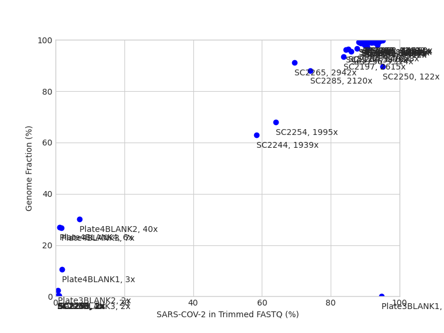
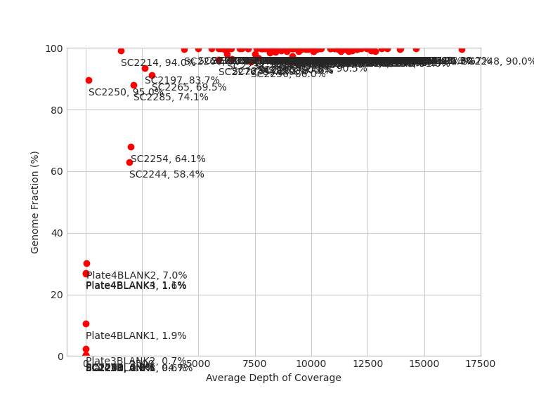
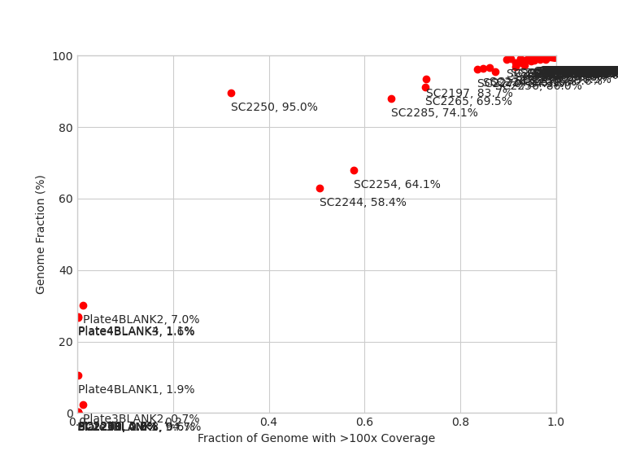

Note: Asterisks (*) indicates a discrepancy between iVar (default) and FreeBayes (if run)
|  |  |  |
| Sample | Lineage (Pangolin) | Clade (Nextstrain) | Data Volume | Quality Control Flags | Kraken2 | QUAST | Variants (iVar) | Unique Variants (FreeBayes) | Consensus Nucleotide Differences (FreeBayes as Reference) | Variants (BreSeq) | ||||||||||||
|---|---|---|---|---|---|---|---|---|---|---|---|---|---|---|---|---|---|---|---|---|---|---|
| Raw Data (read pairs) |
Post Trim (read pairs) |
Genome fraction >90% |
No indels |
Depth >2000 |
Variants >90% |
ORF Frameshifts |
Fastqc quality |
Fastqc adapter |
90% cov >100 |
90% cov >1000 |
Reads SARS-CoV-2 (%) |
Genome Length (bp) |
Genome Fraction (%) |
N's per 100 kbp |
Average Depth of Coverage |
|||||||
| Plate3BLANK1 | Unassigned |
nan |
83 | 77 | FAIL | FAIL | FAIL | WARN | PASS | PASS | PASS | FAIL | WARN | 94.74 | 29903.0 | 0.0 | 100000.0 | 0.5 |
|
|
|
MC; 1; Δ29,903 bp; (100%); ''; 'orf1ab – ORF10' |
| Plate3BLANK2 | Unassigned |
19A |
41951 | 41727 | FAIL | PASS | FAIL | PASS | PASS | FAIL | PASS | FAIL | WARN | 0.69 | 29903.0 | 2.261 | 97639.03 | 2.4 |
|
|
|
|
| Plate3BLANK3 | Unassigned |
nan |
111635 | 111042 | FAIL | FAIL | FAIL | WARN | FAIL | FAIL | PASS | FAIL | WARN | 0.55 | 29903.0 | 0.0 | 99434.84 | 2.8 |
|
G1868C |
S1868G N2905A |
RA; 20,487; Δ1 bp; (5.8%); 'coding (7020/8088nt)'; 'orf1ab →' RA; 20,488; Δ1 bp; (5.8%); 'coding (7021/8088nt)'; 'orf1ab →' |
| Plate4BLANK1 | Unassigned |
20C |
24097 | 23850 | FAIL | PASS | FAIL | WARN | PASS | FAIL | PASS | FAIL | WARN | 1.92 | 29903.0 | 10.541 | 88853.96 | 3.9 | A1154G A28272G G29474T |
G25563T G28975T |
N15966T NN16633TT |
RA; 1,154; A→G; (100%); 'M297V (ATG→GTG)'; 'orf1ab →' RA; 3,037; C→T; (100%); 'F924F (TTC→TTT)'; 'orf1ab →' RA; 18,877; C→T; (100%); 'L1804L (CTA→TTA)'; 'orf1ab →' RA; 25,563; G→T; (100%); 'Q57H (CAG→CAT)'; 'ORF3a →' RA; 28,272; A→G; (100%); 'intergenic (+13/-2)'; 'ORF8 →/→ N' |
| Plate4BLANK2 | Unassigned |
20D |
47226 | 46966 | FAIL | PASS | FAIL | WARN | PASS | FAIL | PASS | FAIL | WARN | 6.98 | 29903.0 | 30.114 | 71022.97 | 40.4 | G1868C C12534T T20988G G21853A A23403G A23484G C28846T (+ 4 more) |
C14790T GGG28881AAC |
NNNNNNNNNNNNNN11617TTTCTTAGGCTATT N17678C N28255T |
RA; 3,037; C→T; (100%); 'F924F (TTC→TTT)'; 'orf1ab →' RA; 10,097; G→A; (100%); 'G3278S (GGT→AGT)'; 'orf1ab →' RA; 11,433; A→G; (100%); 'Y3723C (TAT→TGT)'; 'orf1ab →' RA; 12,534; C→T; (100%); 'T4090I (ACT→ATT)'; 'orf1ab →' RA; 13,536; C→T; (100%); 'Y23Y (TAC→TAT)'; 'orf1ab →' RA; 14,790; C→T; (100%); 'I441I (ATC→ATT)'; 'orf1ab →' RA; 20,988; T→G; (53.2%); 'T2507T (ACT→ACG)'; 'orf1ab →' (+ 6 more) |
| Plate4BLANK3 | Unassigned |
20C |
44246 | 43899 | FAIL | PASS | FAIL | WARN | PASS | FAIL | PASS | FAIL | WARN | 1.63 | 29903.0 | 26.81 | 72688.36 | 7.4 | C7482T G17331T C26735T G28302+A* C28854T |
|
NN12136TG N15249A |
RA; 3,037; C→T; (100%); 'F924F (TTC→TTT)'; 'orf1ab →' RA; 3,051; A→G; (100%); 'E929G (GAG→GGG)'; 'orf1ab →' RA; 7,482; C→T; (60.0%); 'S2406L (TCA→TTA)'; 'orf1ab →' RA; 17,331; G→T; (100%); 'E1288D (GAG→GAT)'; 'orf1ab →' RA; 18,877; C→T; (100%); 'L1804L (CTA→TTA)'; 'orf1ab →' RA; 21,614; C→T; (100%); 'L18F (CTT→TTT)'; 'S →' RA; 23,403; A→G; (100%); 'D614G (GAT→GGT)'; 'S →' (+ 4 more) |
| Plate4BLANK4 | Unassigned |
20C |
48151 | 47897 | FAIL | PASS | FAIL | WARN | FAIL | FAIL | PASS | FAIL | WARN | 1.13 | 29903.0 | 26.894 | 73223.42 | 6.4 | C18877T A23403G G25563T C26735T C28139T T28250+CTG* C28253-A* C28854T |
|
NN23231AA A28254N |
RA; 3,037; C→T; (100%); 'F924F (TTC→TTT)'; 'orf1ab →' RA; 3,051; A→G; (100%); 'E929G (GAG→GGG)'; 'orf1ab →' RA; 18,877; C→T; (100%); 'L1804L (CTA→TTA)'; 'orf1ab →' RA; 23,403; A→G; (100%); 'D614G (GAT→GGT)'; 'S →' RA; 25,563; G→T; (100%); 'Q57H (CAG→CAT)'; 'ORF3a →' RA; 26,735; C→T; (100%); 'Y71Y (TAC→TAT)'; 'M →' RA; 28,139; C→T; (100%); 'S82S (TCC→TCT)'; 'ORF8 →' (+ 4 more) |
| SC2184 | AL.1 |
20B |
601002 | 598514 | PASS | WARN | PASS | WARN | FAIL | PASS | PASS | PASS | WARN | 89.83 | 29901.0 | 97.927 | 2190.56 | 7512.7 | T322-G* C3037T C3130T A3327G G3716A C8655T C11109T (+ 15 more) |
TG322T GGG28881AAC CT29580C |
TA24342NN |
RA; 1,442; Δ1 bp; (7.6%); 'coding (1177/13203nt)'; 'orf1ab →' RA; 1,506; Δ1 bp; (6.2%); 'coding (1241/13203nt)'; 'orf1ab →' RA; 1,507; Δ1 bp; (6.2%); 'coding (1242/13203nt)'; 'orf1ab →' RA; 3,037; C→T; (100%); 'F924F (TTC→TTT)'; 'orf1ab →' RA; 3,327; A→G; (100%); 'Q1021R (CAG→CGG)'; 'orf1ab →' RA; 3,716; G→A; (100%); 'A1151T (GCT→ACT)'; 'orf1ab →' RA; 4,207; G→A; (6.2%); 'A1314A (GCG→GCA)'; 'orf1ab →' (+ 22 more) |
| SC2185 | B.1.438.1 |
20C |
772538 | 770271 | PASS | PASS | PASS | WARN | PASS | PASS | PASS | PASS | PASS | 93.01 | 29903.0 | 99.763 | 244.12 | 10095.4 | C241T T322-G* A1154G C3037T C3589T C8152T C10702T (+ 10 more) |
|
G323N |
RA; 241; C→T; (100%); 'intergenic (–/-25)'; '– /→ orf1ab' RA; 1,154; A→G; (100%); 'M297V (ATG→GTG)'; 'orf1ab →' RA; 3,037; C→T; (100%); 'F924F (TTC→TTT)'; 'orf1ab →' RA; 3,589; C→T; (45.4%); 'H1108H (CAC→CAT)'; 'orf1ab →' RA; 8,152; C→T; (100%); 'V2629V (GTC→GTT)'; 'orf1ab →' RA; 10,702; C→T; (100%); 'D3479D (GAC→GAT)'; 'orf1ab →' RA; 12,121; A→G; (57.1%); 'P3952P (CCA→CCG)'; 'orf1ab →' (+ 12 more) |
| SC2186 | B.1.2 |
20G |
668074 | 665739 | PASS | PASS | PASS | WARN | PASS | PASS | PASS | PASS | WARN | 88.77 | 29903.0 | 98.816 | 1056.75 | 8416.8 | C241T T322-G* C1059T C3037T G8083A C10319T C12525T (+ 18 more) |
TG322T |
T322TN |
RA; 241; C→T; (100%); 'intergenic (–/-25)'; '– /→ orf1ab' RA; 1,059; C→T; (100%); 'T265I (ACC→ATC)'; 'orf1ab →' RA; 3,037; C→T; (100%); 'F924F (TTC→TTT)'; 'orf1ab →' RA; 8,083; G→A; (100%); 'M2606I (ATG→ATA)'; 'orf1ab →' RA; 10,319; C→T; (100%); 'L3352F (CTT→TTT)'; 'orf1ab →' RA; 12,525; C→T; (100%); 'T4087I (ACA→ATA)'; 'orf1ab →' RA; 14,408; C→T; (100%); 'P314L (CCT→CTT)'; 'orf1ab →' (+ 20 more) |
| SC2187 | B.1.36.18 |
20C |
649009 | 646849 | PASS | PASS | PASS | WARN | PASS | PASS | PASS | PASS | WARN | 91.7 | 29903.0 | 99.686 | 317.69 | 8365.0 | C241T T322-G* T1947C C3037T A6731G G8027T C12781T (+ 17 more) |
TG322T |
T322TN |
RA; 241; C→T; (100%); 'intergenic (–/-25)'; '– /→ orf1ab' RA; 3,037; C→T; (100%); 'F924F (TTC→TTT)'; 'orf1ab →' RA; 6,731; A→G; (83.1%); 'I2156V (ATA→GTA)'; 'orf1ab →' RA; 8,027; G→T; (100%); 'V2588F (GTT→TTT)'; 'orf1ab →' RA; 12,781; C→T; (100%); 'Y4172Y (TAC→TAT)'; 'orf1ab →' RA; 14,408; C→T; (100%); 'P314L (CCT→CTT)'; 'orf1ab →' RA; 15,438; G→T; (100%); 'M657I (ATG→ATT)'; 'orf1ab →' (+ 17 more) |
| SC2188 | B.1.36.18 |
20C |
999050 | 995809 | PASS | PASS | PASS | WARN | PASS | PASS | PASS | PASS | WARN | 91.03 | 29903.0 | 98.947 | 1056.75 | 12820.7 | T322-G* T1947C C3037T A6731G G8027T C12781T C14408T (+ 15 more) |
TG322T |
T322TN |
RA; 241; C→T; (100%); 'intergenic (–/-25)'; '– /→ orf1ab' RA; 1,947; T→C; (18.6%); 'V561A (GTT→GCT)'; 'orf1ab →' RA; 3,037; C→T; (100%); 'F924F (TTC→TTT)'; 'orf1ab →' RA; 6,731; A→G; (88.5%); 'I2156V (ATA→GTA)'; 'orf1ab →' RA; 8,027; G→T; (100%); 'V2588F (GTT→TTT)'; 'orf1ab →' RA; 12,781; C→T; (100%); 'Y4172Y (TAC→TAT)'; 'orf1ab →' RA; 14,408; C→T; (100%); 'P314L (CCT→CTT)'; 'orf1ab →' (+ 17 more) |
| SC2189 | B.1.36.18 |
20C |
603084 | 599065 | PASS | PASS | PASS | WARN | FAIL | PASS | PASS | PASS | PASS | 94.26 | 29903.0 | 99.773 | 227.4 | 8046.1 | C241T C823T T1947C C3037T G6220A A6731G G8027T (+ 18 more) |
|
|
RA; 241; C→T; (100%); 'intergenic (–/-25)'; '– /→ orf1ab' RA; 823; C→T; (100%); 'V186V (GTC→GTT)'; 'orf1ab →' RA; 1,947; T→C; (90.4%); 'V561A (GTT→GCT)'; 'orf1ab →' RA; 3,037; C→T; (100%); 'F924F (TTC→TTT)'; 'orf1ab →' RA; 6,220; G→A; (100%); 'L1985L (TTG→TTA)'; 'orf1ab →' RA; 6,731; A→G; (61.6%); 'I2156V (ATA→GTA)'; 'orf1ab →' RA; 8,027; G→T; (100%); 'V2588F (GTT→TTT)'; 'orf1ab →' (+ 24 more) |
| SC2190 | B.1.438.1 |
20C |
671336 | 667137 | PASS | PASS | PASS | WARN | PASS | PASS | PASS | PASS | WARN | 92.76 | 29903.0 | 98.843 | 1160.42 | 8902.2 | C241T T322-G* A1154G C3037T C8152T C10702T A12121G (+ 10 more) |
TG322T |
T322TN |
RA; 1,154; A→G; (100%); 'M297V (ATG→GTG)'; 'orf1ab →' RA; 3,037; C→T; (100%); 'F924F (TTC→TTT)'; 'orf1ab →' RA; 8,152; C→T; (100%); 'V2629V (GTC→GTT)'; 'orf1ab →' RA; 10,702; C→T; (100%); 'D3479D (GAC→GAT)'; 'orf1ab →' RA; 12,121; A→G; (64.2%); 'P3952P (CCA→CCG)'; 'orf1ab →' RA; 14,408; C→T; (100%); 'P314L (CCT→CTT)'; 'orf1ab →' RA; 18,877; C→T; (100%); 'L1804L (CTA→TTA)'; 'orf1ab →' (+ 11 more) |
| SC2191 | B.1.564.1 |
20C |
729567 | 726490 | PASS | PASS | PASS | WARN | FAIL | PASS | PASS | PASS | WARN | 90.48 | 29902.0 | 97.288 | 2541.64 | 9169.5 | T322-G* C679T C841A* C1059T C1528T C3037T C3773T (+ 16 more) |
TG322T |
C840M |
RA; 241; C→T; (100%); 'intergenic (–/-25)'; '– /→ orf1ab' RA; 679; C→T; (31.2%); 'A138A (GCC→GCT)'; 'orf1ab →' RA; 841; C→A; (17.1%); 'G192G (GGC→GGA)'; 'orf1ab →' RA; 1,059; C→T; (100%); 'T265I (ACC→ATC)'; 'orf1ab →' RA; 1,528; C→T; (100%); 'A421A (GCC→GCT)'; 'orf1ab →' RA; 1,898; C→T; (5.9%); 'R545* (CGA→TGA)'; 'orf1ab →' RA; 3,037; C→T; (100%); 'F924F (TTC→TTT)'; 'orf1ab →' (+ 38 more) |
| SC2192 | B.1.36.18 |
20C |
612327 | 609437 | PASS | PASS | PASS | WARN | FAIL | PASS | PASS | PASS | PASS | 93.66 | 29903.0 | 99.776 | 224.06 | 8172.5 | C241T T1947C A2647G C3037T C6706T A6731G G8027T (+ 18 more) |
|
|
RA; 241; C→T; (100%); 'intergenic (–/-25)'; '– /→ orf1ab' RA; 1,947; T→C; (89.4%); 'V561A (GTT→GCT)'; 'orf1ab →' RA; 2,647; A→G; (100%); 'K794K (AAA→AAG)'; 'orf1ab →' RA; 3,037; C→T; (100%); 'F924F (TTC→TTT)'; 'orf1ab →' RA; 6,706; C→T; (100%); 'N2147N (AAC→AAT)'; 'orf1ab →' RA; 6,731; A→G; (56.8%); 'I2156V (ATA→GTA)'; 'orf1ab →' RA; 8,027; G→T; (100%); 'V2588F (GTT→TTT)'; 'orf1ab →' (+ 31 more) |
| SC2193 | B.1.438.1 |
20C |
590313 | 587699 | PASS | WARN | PASS | WARN | FAIL | PASS | PASS | PASS | PASS | 93.27 | 29897.0 | 99.773 | 227.45 | 7813.9 | C241T A1154G G1210A C3037T C8152T G8408A A10187G (+ 14 more) |
GGTTCTA28089G |
|
RA; 241; C→T; (100%); 'intergenic (–/-25)'; '– /→ orf1ab' RA; 1,154; A→G; (100%); 'M297V (ATG→GTG)'; 'orf1ab →' RA; 1,210; G→A; (100%); 'M315I (ATG→ATA)'; 'orf1ab →' RA; 3,037; C→T; (100%); 'F924F (TTC→TTT)'; 'orf1ab →' RA; 7,388; G→A; (7.8%); 'A2375T (GCC→ACC)'; 'orf1ab →' RA; 8,152; C→T; (100%); 'V2629V (GTC→GTT)'; 'orf1ab →' RA; 8,408; G→A; (100%); 'V2715I (GTT→ATT)'; 'orf1ab →' (+ 18 more) |
| SC2194 | B.1.36.18 |
20C |
513217 | 510299 | PASS | PASS | PASS | WARN | FAIL | PASS | PASS | PASS | PASS | 94.68 | 29903.0 | 99.776 | 224.06 | 6835.9 | C241T T1947C C3037T A6731G G6894T G8027T C14408T (+ 16 more) |
|
|
RA; 241; C→T; (100%); 'intergenic (–/-25)'; '– /→ orf1ab' RA; 1,947; T→C; (100%); 'V561A (GTT→GCT)'; 'orf1ab →' RA; 3,037; C→T; (100%); 'F924F (TTC→TTT)'; 'orf1ab →' RA; 6,731; A→G; (55.5%); 'I2156V (ATA→GTA)'; 'orf1ab →' RA; 6,894; G→T; (100%); 'C2210F (TGT→TTT)'; 'orf1ab →' RA; 7,388; G→A; (10.9%); 'A2375T (GCC→ACC)'; 'orf1ab →' RA; 8,027; G→T; (100%); 'V2588F (GTT→TTT)'; 'orf1ab →' (+ 22 more) |
| SC2195 | B.1.1 |
20B |
748882 | 745294 | PASS | PASS | PASS | WARN | FAIL | PASS | PASS | PASS | PASS | 93.03 | 29903.0 | 99.773 | 234.09 | 9770.6 | C241T T322-G* C3037T C7420T C7869T C10279T C11249T (+ 17 more) |
GGG28881AAC |
G323N |
RA; 241; C→T; (100%); 'intergenic (–/-25)'; '– /→ orf1ab' RA; 3,037; C→T; (100%); 'F924F (TTC→TTT)'; 'orf1ab →' RA; 7,388; G→A; (7.0%); 'A2375T (GCC→ACC)'; 'orf1ab →' RA; 7,420; C→T; (100%); 'I2385I (ATC→ATT)'; 'orf1ab →' RA; 7,869; C→T; (100%); 'S2535L (TCA→TTA)'; 'orf1ab →' RA; 10,279; C→T; (100%); 'L3338L (CTC→CTT)'; 'orf1ab →' RA; 11,249; C→T; (100%); 'R3662C (CGT→TGT)'; 'orf1ab →' (+ 18 more) |
| SC2196 | AM.4 |
20B |
700073 | 696563 | PASS | PASS | PASS | WARN | PASS | PASS | PASS | PASS | PASS | 91.92 | 29903.0 | 99.759 | 244.12 | 9201.6 | C241T T322-G* C643T G2659T C3037T C3241T C5284T (+ 17 more) |
GGGG28881AACT |
G323N |
RA; 241; C→T; (100%); 'intergenic (–/-25)'; '– /→ orf1ab' RA; 643; C→T; (100%); 'N126N (AAC→AAT)'; 'orf1ab →' RA; 2,659; G→T; (100%); 'K798N (AAG→AAT)'; 'orf1ab →' RA; 3,037; C→T; (100%); 'F924F (TTC→TTT)'; 'orf1ab →' RA; 3,241; C→T; (100%); 'D992D (GAC→GAT)'; 'orf1ab →' RA; 5,284; C→T; (58.1%); 'N1673N (AAC→AAT)'; 'orf1ab →' RA; 5,884; C→T; (54.1%); 'Y1873Y (TAC→TAT)'; 'orf1ab →' (+ 18 more) |
| SC2197 | B.1.564.1 |
20C |
228000 | 226806 | PASS | PASS | PASS | WARN | FAIL | PASS | PASS | FAIL | WARN | 83.71 | 29902.0 | 93.522 | 6745.37 | 2615.6 | C1059T C3037T C3326A T3402C C3773T T5322-AG* G5666T (+ 39 more) |
C15126T T15164C TTGGC18299CTGGT,TTGGT GCAC18653G |
CNNNN321CTTT G4283K AG5323NN G12330N Y15126C Y15164T G18653GNNN (+ 8 more) |
RA; 479; A→G; (12.2%); 'K72E (AAA→GAA)'; 'orf1ab →' RA; 487; G→T; (15.1%); 'S74S (TCG→TCT)'; 'orf1ab →' RA; 493; T→G; (15.5%); 'A76A (GCT→GCG)'; 'orf1ab →' RA; 783; Δ1 bp; (19.7%); 'coding (518/13203nt)'; 'orf1ab →' RA; 1,059; C→T; (100%); 'T265I (ACC→ATC)'; 'orf1ab →' RA; 2,101; G→T; (24.3%); 'W612C (TGG→TGT)'; 'orf1ab →' RA; 2,947; C→T; (22.0%); 'G894G (GGC→GGT)'; 'orf1ab →' (+ 67 more) |
| SC2198 | B.1.36 |
20C |
680593 | 677461 | PASS | PASS | PASS | WARN | PASS | PASS | PASS | PASS | PASS | 91.06 | 29903.0 | 99.722 | 280.91 | 8916.5 | C241T T322-G* T1947C C3037T G3431T T5653C G7038A (+ 15 more) |
TG322T |
T322TN |
RA; 241; C→T; (100%); 'intergenic (–/-25)'; '– /→ orf1ab' RA; 1,947; T→C; (42.0%); 'V561A (GTT→GCT)'; 'orf1ab →' RA; 3,037; C→T; (100%); 'F924F (TTC→TTT)'; 'orf1ab →' RA; 3,431; G→T; (100%); 'V1056L (GTG→TTG)'; 'orf1ab →' RA; 5,653; T→C; (100%); 'Y1796Y (TAT→TAC)'; 'orf1ab →' RA; 7,038; G→A; (63.2%); 'G2258D (GGC→GAC)'; 'orf1ab →' RA; 9,831; T→C; (5.8%); 'M3189T (ATG→ACG)'; 'orf1ab →' (+ 19 more) |
| SC2199 | B.1.2 |
20G |
473489 | 471714 | PASS | PASS | PASS | WARN | PASS | PASS | PASS | PASS | PASS | 90.99 | 29903.0 | 99.739 | 264.19 | 6143.2 | C241T T322-G* C1059T C3037T G3606T C4551T G8083A (+ 19 more) |
TG322T |
T322TN |
RA; 241; C→T; (100%); 'intergenic (–/-25)'; '– /→ orf1ab' RA; 1,059; C→T; (100%); 'T265I (ACC→ATC)'; 'orf1ab →' RA; 3,037; C→T; (100%); 'F924F (TTC→TTT)'; 'orf1ab →' RA; 3,606; G→T; (100%); 'C1114F (TGT→TTT)'; 'orf1ab →' RA; 4,551; C→T; (100%); 'T1429I (ACA→ATA)'; 'orf1ab →' RA; 8,083; G→A; (100%); 'M2606I (ATG→ATA)'; 'orf1ab →' RA; 10,319; C→T; (100%); 'L3352F (CTT→TTT)'; 'orf1ab →' (+ 22 more) |
| SC2200 | B.1.2 |
20G |
826912 | 823985 | PASS | PASS | PASS | WARN | PASS | PASS | PASS | PASS | PASS | 92.56 | 29903.0 | 99.766 | 237.43 | 10826.5 | C241T C1059T C3037T G3606T C4551T G8083A C10319T (+ 19 more) |
|
|
RA; 241; C→T; (100%); 'intergenic (–/-25)'; '– /→ orf1ab' RA; 1,059; C→T; (100%); 'T265I (ACC→ATC)'; 'orf1ab →' RA; 3,037; C→T; (100%); 'F924F (TTC→TTT)'; 'orf1ab →' RA; 3,606; G→T; (100%); 'C1114F (TGT→TTT)'; 'orf1ab →' RA; 4,551; C→T; (100%); 'T1429I (ACA→ATA)'; 'orf1ab →' RA; 7,388; G→A; (11.3%); 'A2375T (GCC→ACC)'; 'orf1ab →' RA; 8,083; G→A; (100%); 'M2606I (ATG→ATA)'; 'orf1ab →' (+ 21 more) |
| SC2201 | B.1.2 |
20G |
879507 | 874519 | PASS | PASS | PASS | WARN | PASS | PASS | PASS | PASS | PASS | 90.6 | 29903.0 | 99.743 | 260.84 | 11517.6 | C241T T322-G* C1059T C3037T G3606T C4551T G8083A (+ 19 more) |
|
G323N |
RA; 241; C→T; (100%); 'intergenic (–/-25)'; '– /→ orf1ab' RA; 1,059; C→T; (100%); 'T265I (ACC→ATC)'; 'orf1ab →' RA; 3,037; C→T; (100%); 'F924F (TTC→TTT)'; 'orf1ab →' RA; 3,606; G→T; (100%); 'C1114F (TGT→TTT)'; 'orf1ab →' RA; 4,551; C→T; (100%); 'T1429I (ACA→ATA)'; 'orf1ab →' RA; 8,083; G→A; (100%); 'M2606I (ATG→ATA)'; 'orf1ab →' RA; 10,319; C→T; (100%); 'L3352F (CTT→TTT)'; 'orf1ab →' (+ 21 more) |
| SC2202 | B.1.2 |
20G |
639594 | 633321 | PASS | PASS | PASS | WARN | PASS | PASS | PASS | PASS | WARN | 95.0 | 29903.0 | 99.776 | 224.06 | 8407.2 | C241T C1059T C3037T G3606T C4551T G8083A C10319T (+ 18 more) |
|
|
RA; 241; C→T; (100%); 'intergenic (–/-25)'; '– /→ orf1ab' RA; 1,059; C→T; (100%); 'T265I (ACC→ATC)'; 'orf1ab →' RA; 3,037; C→T; (100%); 'F924F (TTC→TTT)'; 'orf1ab →' RA; 3,606; G→T; (100%); 'C1114F (TGT→TTT)'; 'orf1ab →' RA; 4,551; C→T; (100%); 'T1429I (ACA→ATA)'; 'orf1ab →' RA; 7,388; G→A; (7.5%); 'A2375T (GCC→ACC)'; 'orf1ab →' RA; 8,083; G→A; (100%); 'M2606I (ATG→ATA)'; 'orf1ab →' (+ 22 more) |
| SC2203 | B.1.438.1 |
20C |
596121 | 593039 | PASS | PASS | PASS | WARN | PASS | PASS | PASS | PASS | PASS | 93.84 | 29903.0 | 99.776 | 224.06 | 7752.0 | C241T A1154G C3037T C8152T C10138T C10702T C11750T (+ 12 more) |
|
|
RA; 241; C→T; (100%); 'intergenic (–/-25)'; '– /→ orf1ab' RA; 1,154; A→G; (100%); 'M297V (ATG→GTG)'; 'orf1ab →' RA; 3,037; C→T; (100%); 'F924F (TTC→TTT)'; 'orf1ab →' RA; 8,152; C→T; (100%); 'V2629V (GTC→GTT)'; 'orf1ab →' RA; 9,843; T→A; (5.3%); 'L3193* (TTG→TAG)'; 'orf1ab →' RA; 10,138; C→T; (100%); 'N3291N (AAC→AAT)'; 'orf1ab →' RA; 10,702; C→T; (100%); 'D3479D (GAC→GAT)'; 'orf1ab →' (+ 17 more) |
| SC2204 | B.1.36.18 |
20C |
697302 | 694796 | PASS | PASS | PASS | WARN | FAIL | PASS | PASS | PASS | WARN | 88.2 | 29903.0 | 99.077 | 1223.96 | 8675.7 | T322-G* T1947C C3037T A6731G A7184-T* T7266C G8027T (+ 17 more) |
C241T TG322T |
T322TN T7184N Y7265T N22903A |
RA; 241; C→T; (100%); 'intergenic (–/-25)'; '– /→ orf1ab' JC; 1,172; Δ4 bp; (6.5%); 'coding (907-910/13203nt)'; 'orf1ab →' RA; 3,037; C→T; (100%); 'F924F (TTC→TTT)'; 'orf1ab →' JC; 3,941; Δ8 bp; (7.0%); 'coding (3676-3683/13203nt)'; 'orf1ab →' RA; 4,253; C→T; (7.0%); 'P1330S (CCG→TCG)'; 'orf1ab →' RA; 4,520; G→T; (7.3%); 'G1419C (GGT→TGT)'; 'orf1ab →' RA; 6,044; Δ1 bp; (5.7%); 'coding (5779/13203nt)'; 'orf1ab →' (+ 67 more) |
| SC2205 | B.1.36 |
20C |
925660 | 922036 | PASS | PASS | PASS | WARN | PASS | PASS | PASS | PASS | WARN | 89.74 | 29903.0 | 99.271 | 635.39 | 11805.7 | C241T T322-G* T1947C C3037T G3431T T5653C G7038A (+ 15 more) |
TG322T |
T322TN |
RA; 241; C→T; (100%); 'intergenic (–/-25)'; '– /→ orf1ab' RA; 1,947; T→C; (19.3%); 'V561A (GTT→GCT)'; 'orf1ab →' RA; 3,037; C→T; (100%); 'F924F (TTC→TTT)'; 'orf1ab →' RA; 3,431; G→T; (100%); 'V1056L (GTG→TTG)'; 'orf1ab →' RA; 5,653; T→C; (100%); 'Y1796Y (TAT→TAC)'; 'orf1ab →' RA; 7,038; G→A; (100%); 'G2258D (GGC→GAC)'; 'orf1ab →' RA; 10,770; A→G; (100%); 'Y3502C (TAT→TGT)'; 'orf1ab →' (+ 17 more) |
| SC2206 | B.1.36 |
20C |
599887 | 597775 | PASS | PASS | PASS | WARN | FAIL | PASS | PASS | PASS | WARN | 90.64 | 29902.0 | 96.903 | 3220.52 | 7604.3 | T322-G* T1947C C3037T G3431T C3551T T5653C G7038A (+ 16 more) |
TG322T |
|
RA; 241; C→T; (100%); 'intergenic (–/-25)'; '– /→ orf1ab' JC; 519; Δ6 bp; (6.3%); 'coding (254-259/13203nt)'; 'orf1ab →' RA; 841; C→A; (6.7%); 'G192G (GGC→GGA)'; 'orf1ab →' RA; 1,947; T→C; (100%); 'V561A (GTT→GCT)'; 'orf1ab →' RA; 3,037; C→T; (100%); 'F924F (TTC→TTT)'; 'orf1ab →' RA; 3,431; G→T; (100%); 'V1056L (GTG→TTG)'; 'orf1ab →' RA; 3,551; C→T; (100%); 'P1096S (CCA→TCA)'; 'orf1ab →' (+ 29 more) |
| SC2207 | B.1.36 |
20C |
672345 | 669525 | PASS | PASS | PASS | WARN | FAIL | PASS | PASS | PASS | PASS | 92.19 | 29903.0 | 99.776 | 227.4 | 8703.8 | C241T T322-G* T1947C C3037T G3431T T5653C G7038A (+ 15 more) |
|
G323N |
RA; 241; C→T; (100%); 'intergenic (–/-25)'; '– /→ orf1ab' RA; 1,947; T→C; (55.6%); 'V561A (GTT→GCT)'; 'orf1ab →' RA; 3,037; C→T; (100%); 'F924F (TTC→TTT)'; 'orf1ab →' RA; 3,431; G→T; (100%); 'V1056L (GTG→TTG)'; 'orf1ab →' RA; 5,653; T→C; (100%); 'Y1796Y (TAT→TAC)'; 'orf1ab →' RA; 7,038; G→A; (49.0%); 'G2258D (GGC→GAC)'; 'orf1ab →' RA; 7,388; G→A; (5.8%); 'A2375T (GCC→ACC)'; 'orf1ab →' (+ 20 more) |
| SC2208 | B.1.36 |
20C |
550375 | 548192 | PASS | PASS | PASS | WARN | PASS | PASS | PASS | PASS | PASS | 94.07 | 29903.0 | 99.773 | 234.09 | 7198.5 | C241T T1947C C3037T G3431T T5653C G7038A A10770G (+ 15 more) |
|
C29732S |
RA; 241; C→T; (100%); 'intergenic (–/-25)'; '– /→ orf1ab' RA; 1,947; T→C; (88.3%); 'V561A (GTT→GCT)'; 'orf1ab →' RA; 3,037; C→T; (100%); 'F924F (TTC→TTT)'; 'orf1ab →' RA; 3,431; G→T; (100%); 'V1056L (GTG→TTG)'; 'orf1ab →' RA; 5,653; T→C; (100%); 'Y1796Y (TAT→TAC)'; 'orf1ab →' RA; 7,038; G→A; (49.9%); 'G2258D (GGC→GAC)'; 'orf1ab →' RA; 7,388; G→A; (9.5%); 'A2375T (GCC→ACC)'; 'orf1ab →' (+ 16 more) |
| SC2209 | B.1.438.1 |
20C |
738859 | 735819 | PASS | PASS | PASS | WARN | PASS | PASS | PASS | PASS | WARN | 91.06 | 29903.0 | 99.679 | 324.38 | 9568.0 | C241T T322-G* A1154G C3037T T6262C C8152T C10702T (+ 11 more) |
TG322T |
T322TN |
RA; 174; G→A; (5.2%); 'intergenic (–/-92)'; '– /→ orf1ab' RA; 241; C→T; (100%); 'intergenic (–/-25)'; '– /→ orf1ab' RA; 1,154; A→G; (100%); 'M297V (ATG→GTG)'; 'orf1ab →' JC; 1,955; 140 bp→7 bp; (5.4%); 'coding (1690-1829/13203nt)'; 'orf1ab →' RA; 3,037; C→T; (100%); 'F924F (TTC→TTT)'; 'orf1ab →' RA; 6,262; T→C; (33.9%); 'N1999N (AAT→AAC)'; 'orf1ab →' RA; 8,152; C→T; (100%); 'V2629V (GTC→GTT)'; 'orf1ab →' (+ 14 more) |
| SC2210 | AM.4 |
20B |
423108 | 421503 | PASS | PASS | PASS | WARN | PASS | PASS | PASS | PASS | PASS | 94.51 | 29903.0 | 99.786 | 217.37 | 5581.4 | C241T C643T G2659T C3037T C3241T A3942C C5284T (+ 18 more) |
GGGG28881AACT |
|
RA; 241; C→T; (100%); 'intergenic (–/-25)'; '– /→ orf1ab' RA; 643; C→T; (100%); 'N126N (AAC→AAT)'; 'orf1ab →' RA; 2,659; G→T; (100%); 'K798N (AAG→AAT)'; 'orf1ab →' RA; 3,037; C→T; (100%); 'F924F (TTC→TTT)'; 'orf1ab →' RA; 3,241; C→T; (100%); 'D992D (GAC→GAT)'; 'orf1ab →' RA; 3,942; A→C; (100%); 'K1226T (AAA→ACA)'; 'orf1ab →' RA; 5,284; C→T; (37.7%); 'N1673N (AAC→AAT)'; 'orf1ab →' (+ 21 more) |
| SC2211 | B.1.438.1 |
20C |
536619 | 534343 | PASS | PASS | PASS | WARN | PASS | PASS | PASS | PASS | PASS | 91.9 | 29903.0 | 99.759 | 240.78 | 6920.7 | C241T A1154G C3037T T6262C C8152T C10702T A12121G (+ 10 more) |
|
|
RA; 241; C→T; (100%); 'intergenic (–/-25)'; '– /→ orf1ab' RA; 1,154; A→G; (100%); 'M297V (ATG→GTG)'; 'orf1ab →' RA; 3,037; C→T; (100%); 'F924F (TTC→TTT)'; 'orf1ab →' RA; 6,262; T→C; (85.8%); 'N1999N (AAT→AAC)'; 'orf1ab →' RA; 7,388; G→A; (7.4%); 'A2375T (GCC→ACC)'; 'orf1ab →' RA; 8,152; C→T; (100%); 'V2629V (GTC→GTT)'; 'orf1ab →' RA; 10,702; C→T; (100%); 'D3479D (GAC→GAT)'; 'orf1ab →' (+ 19 more) |
| SC2212 | B.1.2 |
20G |
1033227 | 1030493 | PASS | PASS | PASS | WARN | PASS | PASS | PASS | PASS | WARN | 91.79 | 29903.0 | 99.766 | 240.78 | 13371.8 | C225T C241T T322-G* C1059T C3037T T4249C T6025C (+ 18 more) |
TG322T |
T322TN |
RA; 166; A→G; (16.0%); 'intergenic (–/-100)'; '– /→ orf1ab' RA; 225; C→T; (100%); 'intergenic (–/-41)'; '– /→ orf1ab' RA; 241; C→T; (100%); 'intergenic (–/-25)'; '– /→ orf1ab' RA; 815; C→T; (8.3%); 'R184C (CGC→TGC)'; 'orf1ab →' RA; 1,059; C→T; (100%); 'T265I (ACC→ATC)'; 'orf1ab →' RA; 3,037; C→T; (100%); 'F924F (TTC→TTT)'; 'orf1ab →' RA; 4,249; T→C; (55.9%); 'T1328T (ACT→ACC)'; 'orf1ab →' (+ 26 more) |
| SC2213 | B.1.2 |
20G |
770078 | 767387 | PASS | PASS | PASS | WARN | FAIL | PASS | PASS | PASS | PASS | 94.29 | 29903.0 | 99.776 | 230.75 | 10224.2 | C241T C1059T C2485T C3037T C4832T C7113T G7756T (+ 17 more) |
|
|
RA; 241; C→T; (100%); 'intergenic (–/-25)'; '– /→ orf1ab' RA; 1,059; C→T; (100%); 'T265I (ACC→ATC)'; 'orf1ab →' RA; 2,485; C→T; (100%); 'I740I (ATC→ATT)'; 'orf1ab →' RA; 3,037; C→T; (100%); 'F924F (TTC→TTT)'; 'orf1ab →' RA; 4,832; C→T; (100%); 'L1523L (CTA→TTA)'; 'orf1ab →' RA; 7,113; C→T; (68.0%); 'T2283I (ACT→ATT)'; 'orf1ab →' RA; 7,388; G→A; (8.6%); 'A2375T (GCC→ACC)'; 'orf1ab →' (+ 24 more) |
| SC2214 | B.1.2 |
20G |
119985 | 118909 | PASS | PASS | FAIL | WARN | PASS | PASS | PASS | PASS | WARN | 93.96 | 29903.0 | 99.268 | 822.66 | 1563.4 | C241T C1059T A2810G C3037T C4069T C4158T A5967G (+ 17 more) |
|
|
RA; 241; C→T; (100%); 'intergenic (–/-25)'; '– /→ orf1ab' RA; 1,059; C→T; (100%); 'T265I (ACC→ATC)'; 'orf1ab →' RA; 2,810; A→G; (100%); 'I849V (ATT→GTT)'; 'orf1ab →' RA; 3,037; C→T; (100%); 'F924F (TTC→TTT)'; 'orf1ab →' RA; 4,069; C→T; (100%); 'A1268A (GCC→GCT)'; 'orf1ab →' RA; 4,158; C→T; (77.0%); 'A1298V (GCT→GTT)'; 'orf1ab →' RA; 5,967; A→G; (100%); 'K1901R (AAG→AGG)'; 'orf1ab →' (+ 18 more) |
| SC2215 | AL.1 |
20B |
820410 | 816567 | PASS | WARN | PASS | WARN | FAIL | PASS | PASS | FAIL | WARN | 89.06 | 29901.0 | 99.03 | 1762.48 | 10083.9 | T322-G* T514-GTTATG* G702T C841A* C3037T G3716A G3875A (+ 15 more) |
C241T TG322T TGTTATG514T GT13601G CA23124C GGG28881AAC CT29580C |
T322TN T513TNNNNNN C834M G13594GN |
RA; 241; C→T; (100%); 'intergenic (–/-25)'; '– /→ orf1ab' JC; 518; Δ6 bp; (50.5%); 'coding (253-258/13203nt)'; 'orf1ab →' RA; 702; G→T; (37.0%); 'G146V (GGC→GTC)'; 'orf1ab →' RA; 841; C→A; (23.2%); 'G192G (GGC→GGA)'; 'orf1ab →' RA; 1,093; C→T; (5.2%); 'P276P (CCC→CCT)'; 'orf1ab →' RA; 1,473; C→T; (12.6%); 'T403I (ACT→ATT)'; 'orf1ab →' RA; 3,037; C→T; (100%); 'F924F (TTC→TTT)'; 'orf1ab →' (+ 45 more) |
| SC2216 | B.1.160 |
20C |
743119 | 739025 | PASS | PASS | PASS | WARN | FAIL | PASS | PASS | PASS | PASS | 91.56 | 29903.0 | 99.763 | 237.43 | 9805.9 | C241T T1090C C3037T C3832T C4543T G5629T G9526T (+ 20 more) |
|
|
RA; 241; C→T; (100%); 'intergenic (–/-25)'; '– /→ orf1ab' RA; 1,090; T→C; (100%); 'F275F (TTT→TTC)'; 'orf1ab →' RA; 3,037; C→T; (100%); 'F924F (TTC→TTT)'; 'orf1ab →' RA; 3,832; C→T; (19.4%); 'S1189S (AGC→AGT)'; 'orf1ab →' RA; 4,543; C→T; (100%); 'T1426T (ACC→ACT)'; 'orf1ab →' RA; 5,629; G→T; (39.2%); 'T1788T (ACG→ACT)'; 'orf1ab →' RA; 9,526; G→T; (100%); 'M3087I (ATG→ATT)'; 'orf1ab →' (+ 22 more) |
| SC2217 | B.1.438.1 |
20C |
887734 | 884559 | PASS | PASS | PASS | WARN | FAIL | PASS | PASS | PASS | PASS | 90.6 | 29903.0 | 99.679 | 324.38 | 11616.5 | C241T T322-G* A1154G C3037T C8152T C10702T C12081T (+ 12 more) |
|
G323N |
RA; 241; C→T; (100%); 'intergenic (–/-25)'; '– /→ orf1ab' RA; 1,154; A→G; (100%); 'M297V (ATG→GTG)'; 'orf1ab →' RA; 1,503; A→T; (5.1%); 'Y413F (TAT→TTT)'; 'orf1ab →' RA; 1,508; Δ1 bp; (5.1%); 'coding (1243/13203nt)'; 'orf1ab →' RA; 1,510; T→C; (5.1%); 'G415G (GGT→GGC)'; 'orf1ab →' RA; 1,891; T→G; (15.6%); 'R542R (CGT→CGG)'; 'orf1ab →' RA; 2,731; G→A; (5.6%); 'K822K (AAG→AAA)'; 'orf1ab →' (+ 19 more) |
| SC2218 | B.1.36.38 |
20C |
588117 | 585606 | PASS | PASS | PASS | WARN | PASS | PASS | PASS | PASS | PASS | 92.3 | 29903.0 | 99.833 | 167.21 | 7807.3 | C21T C241T T586C T1947C C3037T C7006T A8348G (+ 12 more) |
|
|
RA; 241; C→T; (100%); 'intergenic (–/-25)'; '– /→ orf1ab' RA; 586; T→C; (100%); 'L107L (CTT→CTC)'; 'orf1ab →' RA; 1,947; T→C; (94.5%); 'V561A (GTT→GCT)'; 'orf1ab →' RA; 3,037; C→T; (100%); 'F924F (TTC→TTT)'; 'orf1ab →' RA; 7,006; C→T; (100%); 'T2247T (ACC→ACT)'; 'orf1ab →' RA; 8,348; A→G; (100%); 'S2695G (AGT→GGT)'; 'orf1ab →' RA; 9,843; T→A; (5.4%); 'L3193* (TTG→TAG)'; 'orf1ab →' (+ 12 more) |
| SC2219 | B.1.564.1 |
20C |
801539 | 798191 | PASS | PASS | PASS | WARN | FAIL | PASS | PASS | PASS | PASS | 93.86 | 29903.0 | 99.773 | 227.4 | 10429.5 | C241T C1059T C3037T C3773T T10084C C11941A T14191C (+ 12 more) |
|
|
RA; 241; C→T; (100%); 'intergenic (–/-25)'; '– /→ orf1ab' RA; 1,059; C→T; (100%); 'T265I (ACC→ATC)'; 'orf1ab →' RA; 3,037; C→T; (100%); 'F924F (TTC→TTT)'; 'orf1ab →' RA; 3,773; C→T; (86.2%); 'R1170C (CGC→TGC)'; 'orf1ab →' RA; 7,388; G→A; (10.7%); 'A2375T (GCC→ACC)'; 'orf1ab →' RA; 10,084; T→C; (84.7%); 'S3273S (TCT→TCC)'; 'orf1ab →' RA; 11,941; C→A; (14.9%); 'V3892V (GTC→GTA)'; 'orf1ab →' (+ 15 more) |
| SC2220 | B.1.2 |
20G |
917685 | 914606 | PASS | PASS | PASS | WARN | PASS | PASS | PASS | PASS | PASS | 93.19 | 29903.0 | 99.773 | 227.4 | 12079.5 | C225T C241T C1059T C3037T T4634C T6025C C10319T (+ 19 more) |
|
|
RA; 225; C→T; (100%); 'intergenic (–/-41)'; '– /→ orf1ab' RA; 241; C→T; (100%); 'intergenic (–/-25)'; '– /→ orf1ab' RA; 1,059; C→T; (100%); 'T265I (ACC→ATC)'; 'orf1ab →' RA; 3,037; C→T; (100%); 'F924F (TTC→TTT)'; 'orf1ab →' RA; 4,634; T→C; (100%); 'L1457L (TTA→CTA)'; 'orf1ab →' RA; 6,025; T→C; (100%); 'Y1920Y (TAT→TAC)'; 'orf1ab →' RA; 7,388; G→A; (6.8%); 'A2375T (GCC→ACC)'; 'orf1ab →' (+ 22 more) |
| SC2221 | B.1.2 |
20G |
481339 | 479310 | PASS | PASS | PASS | WARN | PASS | PASS | PASS | PASS | PASS | 94.6 | 29903.0 | 99.773 | 234.09 | 6327.8 | C225T C241T C1059T C3037T T4634C T6025C C10319T (+ 21 more) |
|
|
RA; 225; C→T; (100%); 'intergenic (–/-41)'; '– /→ orf1ab' RA; 241; C→T; (100%); 'intergenic (–/-25)'; '– /→ orf1ab' RA; 1,059; C→T; (100%); 'T265I (ACC→ATC)'; 'orf1ab →' RA; 3,037; C→T; (100%); 'F924F (TTC→TTT)'; 'orf1ab →' RA; 4,634; T→C; (100%); 'L1457L (TTA→CTA)'; 'orf1ab →' RA; 6,025; T→C; (100%); 'Y1920Y (TAT→TAC)'; 'orf1ab →' RA; 7,388; G→A; (9.4%); 'A2375T (GCC→ACC)'; 'orf1ab →' (+ 23 more) |
| SC2222 | B.1.2 |
20G |
617674 | 615241 | PASS | PASS | PASS | WARN | PASS | PASS | PASS | PASS | PASS | 94.45 | 29903.0 | 99.843 | 157.17 | 8160.1 | C225T C241T C1059T C3037T T4634C T6025C C10319T (+ 19 more) |
|
|
RA; 225; C→T; (100%); 'intergenic (–/-41)'; '– /→ orf1ab' RA; 241; C→T; (100%); 'intergenic (–/-25)'; '– /→ orf1ab' RA; 1,059; C→T; (100%); 'T265I (ACC→ATC)'; 'orf1ab →' RA; 3,037; C→T; (100%); 'F924F (TTC→TTT)'; 'orf1ab →' RA; 4,634; T→C; (100%); 'L1457L (TTA→CTA)'; 'orf1ab →' RA; 6,025; T→C; (100%); 'Y1920Y (TAT→TAC)'; 'orf1ab →' RA; 7,388; G→A; (8.4%); 'A2375T (GCC→ACC)'; 'orf1ab →' (+ 22 more) |
| SC2223 | B.1.36.18 |
20C |
864147 | 860503 | PASS | WARN | PASS | WARN | FAIL | PASS | PASS | PASS | WARN | 91.26 | 29902.0 | 99.86 | 140.46 | 11027.0 | C241T T322-G* T1947C C3037T C4276T A6731G G8027T (+ 17 more) |
TG322T |
|
RA; 241; C→T; (100%); 'intergenic (–/-25)'; '– /→ orf1ab' RA; 1,947; T→C; (18.1%); 'V561A (GTT→GCT)'; 'orf1ab →' RA; 3,037; C→T; (100%); 'F924F (TTC→TTT)'; 'orf1ab →' RA; 4,276; C→T; (100%); 'Y1337Y (TAC→TAT)'; 'orf1ab →' RA; 6,731; A→G; (84.6%); 'I2156V (ATA→GTA)'; 'orf1ab →' RA; 8,027; G→T; (100%); 'V2588F (GTT→TTT)'; 'orf1ab →' RA; 11,812; C→T; (100%); 'G3849G (GGC→GGT)'; 'orf1ab →' (+ 19 more) |
| SC2224 | B.1.36.18 |
20C |
1090282 | 1086576 | PASS | PASS | PASS | WARN | FAIL | PASS | PASS | PASS | WARN | 91.3 | 29903.0 | 99.753 | 260.84 | 13952.9 | C241T T322-G* T1947C C3037T G8027T C14408T C14724T (+ 16 more) |
TG322T |
T322TN A23124N |
RA; 241; C→T; (100%); 'intergenic (–/-25)'; '– /→ orf1ab' RA; 652; A→G; (6.2%); 'K129K (AAA→AAG)'; 'orf1ab →' RA; 1,947; T→C; (20.9%); 'V561A (GTT→GCT)'; 'orf1ab →' RA; 3,037; C→T; (100%); 'F924F (TTC→TTT)'; 'orf1ab →' RA; 8,027; G→T; (100%); 'V2588F (GTT→TTT)'; 'orf1ab →' RA; 14,408; C→T; (100%); 'P314L (CCT→CTT)'; 'orf1ab →' RA; 14,724; C→T; (100%); 'F419F (TTC→TTT)'; 'orf1ab →' (+ 16 more) |
| SC2225 | B.1.438.1 |
20C |
1050817 | 1046122 | PASS | PASS | PASS | WARN | FAIL | PASS | PASS | PASS | PASS | 90.67 | 29903.0 | 99.722 | 280.91 | 13933.8 | C241T T322-G* A1154G C3037T C8152T C10702T C11663T (+ 11 more) |
|
G323N |
RA; 241; C→T; (100%); 'intergenic (–/-25)'; '– /→ orf1ab' RA; 1,154; A→G; (100%); 'M297V (ATG→GTG)'; 'orf1ab →' RA; 3,037; C→T; (100%); 'F924F (TTC→TTT)'; 'orf1ab →' RA; 7,388; G→A; (5.3%); 'A2375T (GCC→ACC)'; 'orf1ab →' RA; 8,152; C→T; (100%); 'V2629V (GTC→GTT)'; 'orf1ab →' RA; 10,702; C→T; (100%); 'D3479D (GAC→GAT)'; 'orf1ab →' RA; 11,663; C→T; (75.9%); 'L3800F (CTC→TTC)'; 'orf1ab →' (+ 15 more) |
| SC2226 | B.1.564.1 |
20C |
743823 | 737042 | PASS | PASS | PASS | WARN | FAIL | PASS | PASS | PASS | PASS | 94.24 | 29903.0 | 99.773 | 227.4 | 9914.8 | C241T C1059T G2577A C3037T C3773T A6342G T10084C (+ 8 more) |
|
|
RA; 241; C→T; (100%); 'intergenic (–/-25)'; '– /→ orf1ab' RA; 1,059; C→T; (100%); 'T265I (ACC→ATC)'; 'orf1ab →' RA; 2,577; G→A; (65.9%); 'S771N (AGT→AAT)'; 'orf1ab →' RA; 3,037; C→T; (100%); 'F924F (TTC→TTT)'; 'orf1ab →' RA; 3,773; C→T; (84.7%); 'R1170C (CGC→TGC)'; 'orf1ab →' RA; 6,342; A→G; (100%); 'D2026G (GAT→GGT)'; 'orf1ab →' RA; 7,388; G→A; (8.4%); 'A2375T (GCC→ACC)'; 'orf1ab →' (+ 11 more) |
| SC2227 | B.1.2 |
20G |
774272 | 769846 | PASS | PASS | PASS | WARN | FAIL | PASS | PASS | PASS | PASS | 92.28 | 29903.0 | 99.86 | 140.45 | 10176.7 | C225T C241T C1059T C3037T T4634C T6025C C10319T (+ 19 more) |
|
|
RA; 225; C→T; (100%); 'intergenic (–/-41)'; '– /→ orf1ab' RA; 241; C→T; (100%); 'intergenic (–/-25)'; '– /→ orf1ab' RA; 1,059; C→T; (100%); 'T265I (ACC→ATC)'; 'orf1ab →' RA; 3,037; C→T; (100%); 'F924F (TTC→TTT)'; 'orf1ab →' RA; 4,634; T→C; (100%); 'L1457L (TTA→CTA)'; 'orf1ab →' RA; 6,025; T→C; (100%); 'Y1920Y (TAT→TAC)'; 'orf1ab →' RA; 7,388; G→A; (9.4%); 'A2375T (GCC→ACC)'; 'orf1ab →' (+ 23 more) |
| SC2228 | B.1.243 |
20A |
831538 | 826314 | PASS | PASS | PASS | WARN | PASS | PASS | PASS | PASS | PASS | 91.21 | 29903.0 | 99.813 | 193.96 | 11013.0 | C241T T322-G* G714A C1063T C3037T G8024A C8841T (+ 13 more) |
|
G323N |
RA; 241; C→T; (100%); 'intergenic (–/-25)'; '– /→ orf1ab' RA; 714; G→A; (43.4%); 'G150D (GGC→GAC)'; 'orf1ab →' RA; 1,063; C→T; (100%); 'F266F (TTC→TTT)'; 'orf1ab →' RA; 3,037; C→T; (100%); 'F924F (TTC→TTT)'; 'orf1ab →' RA; 8,024; G→A; (100%); 'A2587T (GCA→ACA)'; 'orf1ab →' RA; 8,841; C→T; (41.5%); 'T2859I (ACA→ATA)'; 'orf1ab →' RA; 9,084; A→G; (100%); 'E2940G (GAA→GGA)'; 'orf1ab →' (+ 15 more) |
| SC2229 | B.1.1.157 |
20B |
672151 | 668260 | PASS | PASS | PASS | WARN | FAIL | PASS | PASS | PASS | PASS | 94.23 | 29903.0 | 99.776 | 224.06 | 8923.5 | C241T C3037T C6145T G6865T G10870T G11272A G11998T (+ 13 more) |
GGG28881AAC |
|
RA; 241; C→T; (100%); 'intergenic (–/-25)'; '– /→ orf1ab' RA; 3,037; C→T; (100%); 'F924F (TTC→TTT)'; 'orf1ab →' RA; 6,145; C→T; (100%); 'F1960F (TTC→TTT)'; 'orf1ab →' RA; 6,865; G→T; (53.4%); 'K2200N (AAG→AAT)'; 'orf1ab →' RA; 7,388; G→A; (13.2%); 'A2375T (GCC→ACC)'; 'orf1ab →' RA; 9,843; T→A; (5.2%); 'L3193* (TTG→TAG)'; 'orf1ab →' RA; 10,870; G→T; (100%); 'L3535L (CTG→CTT)'; 'orf1ab →' (+ 18 more) |
| SC2230 | AM.4 |
20B |
861567 | 857655 | PASS | PASS | PASS | WARN | FAIL | PASS | PASS | PASS | PASS | 90.22 | 29903.0 | 99.749 | 254.16 | 11345.3 | C241T T322-G* C643T G2659T C3037T C3241T C5284T (+ 20 more) |
TG322T GGGG28881AACT |
T322TN |
RA; 241; C→T; (100%); 'intergenic (–/-25)'; '– /→ orf1ab' RA; 643; C→T; (100%); 'N126N (AAC→AAT)'; 'orf1ab →' RA; 2,659; G→T; (100%); 'K798N (AAG→AAT)'; 'orf1ab →' RA; 3,037; C→T; (100%); 'F924F (TTC→TTT)'; 'orf1ab →' RA; 3,241; C→T; (100%); 'D992D (GAC→GAT)'; 'orf1ab →' RA; 5,284; C→T; (85.7%); 'N1673N (AAC→AAT)'; 'orf1ab →' RA; 5,884; C→T; (49.2%); 'Y1873Y (TAC→TAT)'; 'orf1ab →' (+ 18 more) |
| SC2231 | B.1.2 |
20G |
695864 | 692724 | PASS | PASS | PASS | WARN | PASS | PASS | PASS | PASS | PASS | 94.2 | 29903.0 | 99.773 | 230.75 | 9173.0 | C241T T844G C1059T C2485T C3037T C4832T C7113T (+ 16 more) |
|
|
RA; 241; C→T; (100%); 'intergenic (–/-25)'; '– /→ orf1ab' RA; 844; T→G; (45.4%); 'P193P (CCT→CCG)'; 'orf1ab →' RA; 1,059; C→T; (100%); 'T265I (ACC→ATC)'; 'orf1ab →' RA; 2,485; C→T; (100%); 'I740I (ATC→ATT)'; 'orf1ab →' RA; 3,037; C→T; (100%); 'F924F (TTC→TTT)'; 'orf1ab →' RA; 4,832; C→T; (100%); 'L1523L (CTA→TTA)'; 'orf1ab →' RA; 7,113; C→T; (63.4%); 'T2283I (ACT→ATT)'; 'orf1ab →' (+ 21 more) |
| SC2232 | AM.4 |
20B |
928024 | 923798 | PASS | PASS | PASS | WARN | PASS | PASS | PASS | PASS | WARN | 90.33 | 29903.0 | 99.766 | 237.43 | 12066.5 | C241T T322-G* C643T G2659T C3037T C3241T C5284T (+ 19 more) |
TG322T GGGG28881AACT |
T322TN N29836C |
RA; 241; C→T; (100%); 'intergenic (–/-25)'; '– /→ orf1ab' RA; 643; C→T; (100%); 'N126N (AAC→AAT)'; 'orf1ab →' RA; 2,659; G→T; (100%); 'K798N (AAG→AAT)'; 'orf1ab →' RA; 3,037; C→T; (100%); 'F924F (TTC→TTT)'; 'orf1ab →' RA; 3,241; C→T; (100%); 'D992D (GAC→GAT)'; 'orf1ab →' RA; 5,284; C→T; (94.9%); 'N1673N (AAC→AAT)'; 'orf1ab →' RA; 5,884; C→T; (35.3%); 'Y1873Y (TAC→TAT)'; 'orf1ab →' (+ 21 more) |
| SC2233 | AM.4 |
20B |
886187 | 882396 | PASS | PASS | PASS | WARN | PASS | PASS | PASS | PASS | WARN | 90.32 | 29903.0 | 99.679 | 324.38 | 11504.8 | C241T T322-G* C643T G2659T C3037T C3241T A3942C (+ 18 more) |
TG322T GGGG28881AACT |
T322TN |
RA; 241; C→T; (100%); 'intergenic (–/-25)'; '– /→ orf1ab' RA; 643; C→T; (100%); 'N126N (AAC→AAT)'; 'orf1ab →' RA; 841; C→A; (8.0%); 'G192G (GGC→GGA)'; 'orf1ab →' RA; 2,659; G→T; (100%); 'K798N (AAG→AAT)'; 'orf1ab →' RA; 3,037; C→T; (100%); 'F924F (TTC→TTT)'; 'orf1ab →' RA; 3,241; C→T; (100%); 'D992D (GAC→GAT)'; 'orf1ab →' RA; 3,942; A→C; (100%); 'K1226T (AAA→ACA)'; 'orf1ab →' (+ 20 more) |
| SC2234 | AM.4 |
20B |
548011 | 545524 | PASS | WARN* | PASS | WARN | FAIL | PASS | PASS | FAIL | WARN | 85.06 | 29903.0 | 96.542 | 3822.36 | 6483.4 | T322-G* C643T C673-G* G2659T G3004+T* C3037T C3241T (+ 23 more) |
TG322T GGGG28881AACT |
G673N G3003GN TT18898NN |
RA; 241; C→T; (100%); 'intergenic (–/-25)'; '– /→ orf1ab' RA; 643; C→T; (100%); 'N126N (AAC→AAT)'; 'orf1ab →' RA; 1,033; A→T; (9.0%); 'E256D (GAA→GAT)'; 'orf1ab →' RA; 1,061; T→C; (13.8%); 'F266L (TTC→CTC)'; 'orf1ab →' RA; 1,773; Δ1 bp; (12.5%); 'coding (1508/13203nt)'; 'orf1ab →' RA; 1,775; G→A; (13.2%); 'E504K (GAA→AAA)'; 'orf1ab →' RA; 2,659; G→T; (100%); 'K798N (AAG→AAT)'; 'orf1ab →' (+ 38 more) |
| SC2235 | B.1.36.26 |
20C |
790995 | 787843 | PASS | WARN | PASS | WARN | PASS | PASS | PASS | PASS | PASS | 90.95 | 29902.0 | 99.679 | 324.39 | 10254.8 | G61T C183T C241T T322-G* C913T C1541T C1687T (+ 21 more) |
CA28253C |
G323N |
RA; 913; C→T; (100%); 'S216S (TCC→TCT)'; 'orf1ab →' RA; 1,541; C→T; (100%); 'R426C (CGT→TGT)'; 'orf1ab →' RA; 1,687; C→T; (100%); 'A474A (GCC→GCT)'; 'orf1ab →' RA; 2,836; C→T; (9.0%); 'C857C (TGC→TGT)'; 'orf1ab →' RA; 3,037; C→T; (100%); 'F924F (TTC→TTT)'; 'orf1ab →' RA; 5,758; C→T; (100%); 'Y1831Y (TAC→TAT)'; 'orf1ab →' RA; 9,180; C→T; (100%); 'S2972F (TCT→TTT)'; 'orf1ab →' (+ 17 more) |
| SC2236 | AM.4 |
20B |
866206 | 862954 | PASS | PASS | PASS | WARN | FAIL | PASS | PASS | PASS | PASS | 90.94 | 29903.0 | 99.719 | 280.91 | 11372.2 | C241T C643T C1968T C2143A G2659T C3037T C3241T (+ 20 more) |
GGGG28881AACT |
|
RA; 241; C→T; (100%); 'intergenic (–/-25)'; '– /→ orf1ab' RA; 643; C→T; (100%); 'N126N (AAC→AAT)'; 'orf1ab →' RA; 1,968; C→T; (100%); 'T568I (ACA→ATA)'; 'orf1ab →' RA; 2,143; C→A; (100%); 'P626P (CCC→CCA)'; 'orf1ab →' RA; 2,659; G→T; (100%); 'K798N (AAG→AAT)'; 'orf1ab →' RA; 3,037; C→T; (100%); 'F924F (TTC→TTT)'; 'orf1ab →' RA; 3,241; C→T; (100%); 'D992D (GAC→GAT)'; 'orf1ab →' (+ 20 more) |
| SC2237 | B.1.36.18 |
20C |
947358 | 942794 | PASS | PASS | PASS | WARN | PASS | PASS | PASS | PASS | PASS | 90.48 | 29903.0 | 99.843 | 160.52 | 12459.5 | C241T T322-G* G1148T T1947C C3037T C7095T C7764T (+ 18 more) |
TG322T |
T322TN |
RA; 241; C→T; (100%); 'intergenic (–/-25)'; '– /→ orf1ab' RA; 1,148; G→T; (100%); 'G295C (GGC→TGC)'; 'orf1ab →' RA; 1,947; T→C; (31.5%); 'V561A (GTT→GCT)'; 'orf1ab →' RA; 3,037; C→T; (100%); 'F924F (TTC→TTT)'; 'orf1ab →' RA; 7,095; C→T; (66.9%); 'T2277I (ACT→ATT)'; 'orf1ab →' RA; 7,764; C→T; (100%); 'S2500F (TCC→TTC)'; 'orf1ab →' RA; 8,027; G→T; (100%); 'V2588F (GTT→TTT)'; 'orf1ab →' (+ 19 more) |
| SC2238 | B.1.1.7 |
20I (Alpha, V1) |
477053 | 474091 | PASS | WARN | PASS | WARN | WARN | PASS | PASS | PASS | WARN | 93.61 | 29884.0 | 97.94 | 1967.61 | 6275.7 | T322-G* C913T C2110T C3037T C3267T C5388A C5986T (+ 31 more) |
TG322T GTCTGGTTTT11287G ATACATG21764A TTTA21990T TA28270T GAT28280CTA GGG28881AAC |
T322TN |
RA; 913; C→T; (100%); 'S216S (TCC→TCT)'; 'orf1ab →' RA; 2,110; C→T; (100%); 'N615N (AAC→AAT)'; 'orf1ab →' RA; 3,037; C→T; (100%); 'F924F (TTC→TTT)'; 'orf1ab →' RA; 3,267; C→T; (100%); 'T1001I (ACT→ATT)'; 'orf1ab →' RA; 5,388; C→A; (100%); 'A1708D (GCT→GAT)'; 'orf1ab →' RA; 5,986; C→T; (100%); 'F1907F (TTC→TTT)'; 'orf1ab →' RA; 6,954; T→C; (100%); 'I2230T (ATA→ACA)'; 'orf1ab →' (+ 26 more) |
| SC2240 | B.1.36.18 |
20C |
971393 | 965776 | PASS | WARN | PASS | WARN | PASS | PASS | PASS | PASS | WARN | 90.21 | 29902.0 | 99.241 | 1264.13 | 12657.7 | T322-G* C583T G1148T T1947C C3037T C7764T G8027T (+ 17 more) |
C241T TG322T |
NN9480TG |
RA; 241; C→T; (100%); 'intergenic (–/-25)'; '– /→ orf1ab' RA; 583; C→T; (100%); 'V106V (GTC→GTT)'; 'orf1ab →' RA; 1,148; G→T; (100%); 'G295C (GGC→TGC)'; 'orf1ab →' RA; 3,037; C→T; (100%); 'F924F (TTC→TTT)'; 'orf1ab →' RA; 7,764; C→T; (100%); 'S2500F (TCC→TTC)'; 'orf1ab →' RA; 8,027; G→T; (100%); 'V2588F (GTT→TTT)'; 'orf1ab →' RA; 8,096; A→G; (100%); 'T2611A (ACA→GCA)'; 'orf1ab →' (+ 19 more) |
| SC2241 | B.1.36.18 |
20C |
754380 | 748937 | PASS | PASS | PASS | WARN | PASS | PASS | PASS | PASS | PASS | 92.99 | 29903.0 | 99.833 | 167.21 | 9941.0 | C241T C955T T1947C C2676T C3037T G8027T C9541T (+ 16 more) |
|
|
RA; 241; C→T; (100%); 'intergenic (–/-25)'; '– /→ orf1ab' RA; 955; C→T; (47.3%); 'C230C (TGC→TGT)'; 'orf1ab →' RA; 1,947; T→C; (63.3%); 'V561A (GTT→GCT)'; 'orf1ab →' RA; 2,676; C→T; (100%); 'P804L (CCT→CTT)'; 'orf1ab →' RA; 3,037; C→T; (100%); 'F924F (TTC→TTT)'; 'orf1ab →' RA; 7,388; G→A; (6.2%); 'A2375T (GCC→ACC)'; 'orf1ab →' RA; 8,027; G→T; (100%); 'V2588F (GTT→TTT)'; 'orf1ab →' (+ 19 more) |
| SC2242 | B.1.36.18 |
20C |
750369 | 746683 | PASS | WARN | PASS | WARN | FAIL | PASS | PASS | PASS | WARN | 88.93 | 29902.0 | 98.963 | 1521.64 | 9444.3 | T322-G* T1947C C3037T G8027T A9272T G11083T C11750T (+ 20 more) |
C241T TG322T |
ATATGAGTGTGACATACCCATTGGTGCAGGTATATGCGCTAGTT23538NNNNNNNNNNNNNNNNNNNNNNNNNNNNNNNNNNNNNNNNNNNN |
RA; 241; C→T; (100%); 'intergenic (–/-25)'; '– /→ orf1ab' JC; 510; Δ15 bp; (13.5%); 'coding (245-259/13203nt)'; 'orf1ab →' RA; 2,062; C→T; (5.2%); 'A599A (GCC→GCT)'; 'orf1ab →' RA; 3,037; C→T; (100%); 'F924F (TTC→TTT)'; 'orf1ab →' JC; 3,851; Δ131 bp; (5.5%); 'coding (3586-3716/13203nt)'; 'orf1ab →' JC; 7,147; 22 bp→CA; (72.5%); 'coding (6882-6903/13203nt)'; 'orf1ab →' RA; 7,355; C→T; (18.0%); 'L2364F (CTT→TTT)'; 'orf1ab →' (+ 26 more) |
| SC2243 | B.1.36.18 |
20C |
1139901 | 1134945 | PASS | PASS | PASS | WARN | PASS | PASS | PASS | PASS | PASS | 90.68 | 29903.0 | 99.826 | 187.27 | 14637.6 | C241T T322-G* C1263T T1947C C3037T G4643A G8027T (+ 19 more) |
TG322T |
T322TN |
RA; 241; C→T; (100%); 'intergenic (–/-25)'; '– /→ orf1ab' RA; 1,263; C→T; (94.7%); 'T333M (ACG→ATG)'; 'orf1ab →' RA; 1,947; T→C; (16.9%); 'V561A (GTT→GCT)'; 'orf1ab →' RA; 3,037; C→T; (100%); 'F924F (TTC→TTT)'; 'orf1ab →' RA; 4,643; G→A; (16.2%); 'E1460K (GAA→AAA)'; 'orf1ab →' RA; 8,027; G→T; (100%); 'V2588F (GTT→TTT)'; 'orf1ab →' RA; 10,181; A→G; (14.5%); 'I3306V (ATC→GTC)'; 'orf1ab →' (+ 27 more) |
| SC2244 | B.1.1.7 |
20I (Alpha, V1) |
238776 | 236634 | FAIL | WARN | FAIL | WARN | FAIL | PASS | PASS | FAIL | WARN | 58.39 | 29891.0 | 62.89 | 37302.2 | 1939.4 | C913T T2428C C2925T C3037T C3267T A4991C* C4993+CA* (+ 33 more) |
GTCTGGTTTT11287G AC14283A AG23884A TA28270T GAT28280CTA GGG28881AAC GC29329TT |
A4991M A4994M A28846N |
RA; 913; C→T; (100%); 'S216S (TCC→TCT)'; 'orf1ab →' RA; 2,925; C→T; (100%); 'S887F (TCT→TTT)'; 'orf1ab →' RA; 3,037; C→T; (100%); 'F924F (TTC→TTT)'; 'orf1ab →' RA; 3,267; C→T; (100%); 'T1001I (ACT→ATT)'; 'orf1ab →' RA; 5,388; C→A; (100%); 'A1708D (GCT→GAT)'; 'orf1ab →' RA; 5,986; C→T; (100%); 'F1907F (TTC→TTT)'; 'orf1ab →' RA; 6,954; T→C; (100%); 'I2230T (ATA→ACA)'; 'orf1ab →' (+ 22 more) |
| SC2245 | AL.1 |
20B |
800421 | 797029 | PASS | WARN | PASS | WARN | FAIL | PASS | PASS | PASS | WARN | 90.12 | 29901.0 | 98.95 | 1183.91 | 10103.6 | C241T T322-G* C3037T G3716A A9272T C11109T C14408T (+ 12 more) |
TG322T GGG28881AAC CT29580C |
NN9291TT A23124N |
RA; 241; C→T; (100%); 'intergenic (–/-25)'; '– /→ orf1ab' RA; 3,037; C→T; (100%); 'F924F (TTC→TTT)'; 'orf1ab →' RA; 3,716; G→A; (100%); 'A1151T (GCT→ACT)'; 'orf1ab →' RA; 11,109; C→T; (100%); 'A3615V (GCT→GTT)'; 'orf1ab →' RA; 14,408; C→T; (100%); 'P314L (CCT→CTT)'; 'orf1ab →' RA; 14,583; C→T; (90.5%); 'H372H (CAC→CAT)'; 'orf1ab →' RA; 20,000; T→C; (6.2%); 'V2178A (GTT→GCT)'; 'orf1ab →' (+ 11 more) |
| SC2246 | Unassigned |
nan |
49466 | 49098 | FAIL | FAIL | FAIL | WARN | PASS | FAIL | PASS | FAIL | WARN | 0.58 | 29903.0 | 0.0 | 99722.44 | 1.4 | G1868C |
|
|
MC; 1; Δ29,903 bp; (100%); ''; 'orf1ab – ORF10' |
| SC2247 | B.1.36.18 |
20C |
698466 | 695288 | PASS | PASS | PASS | WARN | FAIL | PASS | PASS | PASS | PASS | 94.41 | 29903.0 | 99.773 | 227.4 | 9102.8 | C241T T1947C C3037T A6731G G8027T C14408T G15438T (+ 15 more) |
|
|
RA; 241; C→T; (100%); 'intergenic (–/-25)'; '– /→ orf1ab' RA; 1,947; T→C; (87.8%); 'V561A (GTT→GCT)'; 'orf1ab →' RA; 3,037; C→T; (100%); 'F924F (TTC→TTT)'; 'orf1ab →' RA; 6,731; A→G; (61.5%); 'I2156V (ATA→GTA)'; 'orf1ab →' RA; 8,027; G→T; (100%); 'V2588F (GTT→TTT)'; 'orf1ab →' RA; 9,843; T→A; (5.1%); 'L3193* (TTG→TAG)'; 'orf1ab →' RA; 14,408; C→T; (100%); 'P314L (CCT→CTT)'; 'orf1ab →' (+ 22 more) |
| SC2248 | B.1.438.1 |
20C |
1292307 | 1287377 | PASS | PASS | PASS | WARN | FAIL | PASS | PASS | PASS | PASS | 90.0 | 29903.0 | 99.679 | 327.73 | 16667.6 | C241T T322-G* A1154G C3037T C8152T A12121G C14408T (+ 11 more) |
|
G323N |
RA; 241; C→T; (100%); 'intergenic (–/-25)'; '– /→ orf1ab' RA; 1,154; A→G; (100%); 'M297V (ATG→GTG)'; 'orf1ab →' RA; 3,037; C→T; (100%); 'F924F (TTC→TTT)'; 'orf1ab →' RA; 8,152; C→T; (100%); 'V2629V (GTC→GTT)'; 'orf1ab →' RA; 12,121; A→G; (63.4%); 'P3952P (CCA→CCG)'; 'orf1ab →' RA; 14,408; C→T; (100%); 'P314L (CCT→CTT)'; 'orf1ab →' RA; 17,135; C→A; (24.1%); 'P1223H (CCT→CAT)'; 'orf1ab →' (+ 12 more) |
| SC2249 | B.1.36 |
20C |
845606 | 840116 | PASS | PASS | PASS | WARN | PASS | PASS | PASS | PASS | PASS | 91.57 | 29903.0 | 99.676 | 327.73 | 11177.5 | C241T T322-G* C832T T1947C C3037T T3707G G6641T (+ 14 more) |
|
G323N |
RA; 241; C→T; (100%); 'intergenic (–/-25)'; '– /→ orf1ab' RA; 832; C→T; (100%); 'N189N (AAC→AAT)'; 'orf1ab →' RA; 1,947; T→C; (42.8%); 'V561A (GTT→GCT)'; 'orf1ab →' RA; 3,037; C→T; (100%); 'F924F (TTC→TTT)'; 'orf1ab →' RA; 3,707; T→G; (100%); 'L1148V (TTA→GTA)'; 'orf1ab →' RA; 6,641; G→T; (100%); 'G2126C (GGT→TGT)'; 'orf1ab →' RA; 9,843; T→A; (5.6%); 'L3193* (TTG→TAG)'; 'orf1ab →' (+ 14 more) |
| SC2250 | B.1.36.18 |
20C |
10311 | 9477 | FAIL | WARN | FAIL | WARN | PASS | PASS | PASS | FAIL | WARN | 95.02 | 29895.0 | 89.59 | 12289.68 | 122.5 | C241T C583T G1148T T1947C C3037T A3908G C7764T (+ 16 more) |
C26735T TCACCGAGG29729T |
NNN11178TGT N28809G |
RA; 241; C→T; (100%); 'intergenic (–/-25)'; '– /→ orf1ab' RA; 583; C→T; (100%); 'V106V (GTC→GTT)'; 'orf1ab →' RA; 1,148; G→T; (100%); 'G295C (GGC→TGC)'; 'orf1ab →' RA; 1,947; T→C; (100%); 'V561A (GTT→GCT)'; 'orf1ab →' RA; 3,037; C→T; (100%); 'F924F (TTC→TTT)'; 'orf1ab →' RA; 3,908; A→G; (100%); 'I1215V (ATA→GTA)'; 'orf1ab →' RA; 7,764; C→T; (100%); 'S2500F (TCC→TTC)'; 'orf1ab →' (+ 16 more) |
| SC2251 | Unassigned |
nan |
76534 | 73813 | FAIL | FAIL | FAIL | WARN | PASS | FAIL | PASS | FAIL | WARN | 0.79 | 29903.0 | 0.0 | 99381.33 | 2.3 |
|
G1868C |
S1868G N2905A |
RA; 28,821; C→A; (100%); 'S183Y (TCT→TAT)'; 'N →' |
| SC2252 | B.1.564.1 |
20C |
865877 | 858498 | PASS | WARN | PASS | WARN | PASS | PASS | PASS | PASS | PASS | 89.98 | 29902.0 | 99.766 | 234.1 | 11190.9 | C241T T322-G* C1059T A2500C C3037T C3773T T10084C (+ 11 more) |
TG322T |
|
RA; 241; C→T; (100%); 'intergenic (–/-25)'; '– /→ orf1ab' RA; 1,059; C→T; (100%); 'T265I (ACC→ATC)'; 'orf1ab →' RA; 2,500; A→C; (100%); 'E745D (GAA→GAC)'; 'orf1ab →' RA; 3,037; C→T; (100%); 'F924F (TTC→TTT)'; 'orf1ab →' RA; 3,773; C→T; (94.8%); 'R1170C (CGC→TGC)'; 'orf1ab →' RA; 10,084; T→C; (30.2%); 'S3273S (TCT→TCC)'; 'orf1ab →' RA; 14,148; T→C; (100%); 'S227S (TCT→TCC)'; 'orf1ab →' (+ 15 more) |
| SC2253 | B.1.438.1 |
20C |
944497 | 938783 | PASS | PASS | PASS | WARN | FAIL | PASS | PASS | PASS | PASS | 90.3 | 29903.0 | 99.763 | 240.78 | 12212.6 | C241T T322-G* A1154G C3037T C8152T C10702T A12121G (+ 10 more) |
TG322T |
T322TN |
RA; 241; C→T; (100%); 'intergenic (–/-25)'; '– /→ orf1ab' RA; 1,154; A→G; (100%); 'M297V (ATG→GTG)'; 'orf1ab →' RA; 3,037; C→T; (100%); 'F924F (TTC→TTT)'; 'orf1ab →' RA; 8,152; C→T; (100%); 'V2629V (GTC→GTT)'; 'orf1ab →' RA; 10,702; C→T; (100%); 'D3479D (GAC→GAT)'; 'orf1ab →' RA; 12,121; A→G; (57.5%); 'P3952P (CCA→CCG)'; 'orf1ab →' RA; 14,408; C→T; (100%); 'P314L (CCT→CTT)'; 'orf1ab →' (+ 14 more) |
| SC2254 | Unassigned |
20C |
232382 | 230475 | FAIL | WARN | FAIL | WARN | FAIL | PASS | PASS | FAIL | WARN | 64.07 | 29901.0 | 68.057 | 31487.24 | 1995.9 | T322-G* C3037T T5224-AA* T5788-A* T6396+A* G7798T C9969+A* (+ 20 more) |
TG322T TAA5224T C9969CA GT11048G TC26460T A28145TA,AC |
T5223TNN A5786N C13427N N23326A AC28141A A29334R K29554T |
RA; 3,037; C→T; (100%); 'F924F (TTC→TTT)'; 'orf1ab →' RA; 3,400; T→A; (22.4%); 'I1045I (ATT→ATA)'; 'orf1ab →' RA; 5,225; Δ2 bp; (100%); 'coding (4960-4961/13203nt)'; 'orf1ab →' RA; 7,798; G→T; (100%); 'K2511N (AAG→AAT)'; 'orf1ab →' RA; 9,969:1; +A; (100%); 'coding (9704/13203nt)'; 'orf1ab →' RA; 10,323; A→G; (100%); 'K3353R (AAG→AGG)'; 'orf1ab →' RA; 11,049; Δ1 bp; (100%); 'coding (10784/13203nt)'; 'orf1ab →' (+ 33 more) |
| SC2255 | C.36.1 |
20D |
998254 | 992813 | PASS | WARN | PASS | WARN | PASS | PASS | PASS | PASS | WARN | 89.25 | 29902.0 | 99.766 | 571.87 | 12632.5 | C241T T322-G* C3037T C4002T C9693T G10097A A11433G (+ 21 more) |
TG322T GGG28881AAC |
|
RA; 241; C→T; (100%); 'intergenic (–/-25)'; '– /→ orf1ab' RA; 3,037; C→T; (100%); 'F924F (TTC→TTT)'; 'orf1ab →' RA; 4,002; C→T; (100%); 'T1246I (ACT→ATT)'; 'orf1ab →' RA; 9,693; C→T; (100%); 'A3143V (GCT→GTT)'; 'orf1ab →' RA; 9,843; T→A; (9.6%); 'L3193* (TTG→TAG)'; 'orf1ab →' RA; 10,097; G→A; (100%); 'G3278S (GGT→AGT)'; 'orf1ab →' RA; 11,433; A→G; (100%); 'Y3723C (TAT→TGT)'; 'orf1ab →' (+ 27 more) |
| SC2256 | B.1.36.38 |
20C |
608953 | 605735 | PASS | PASS | PASS | WARN | FAIL | PASS | PASS | FAIL | WARN | 85.97 | 29902.0 | 95.505 | 4411.08 | 7314.9 | T322-G* T586C G675C C853T T1947C C3037T T3862A (+ 28 more) |
TG322T |
TA4556NN T13601N G23857N |
RA; 586; T→C; (100%); 'L107L (CTT→CTC)'; 'orf1ab →' RA; 675; G→C; (35.1%); 'G137A (GGC→GCC)'; 'orf1ab →' RA; 853; C→T; (100%); 'Y196Y (TAC→TAT)'; 'orf1ab →' RA; 860; Δ1 bp; (9.5%); 'coding (595/13203nt)'; 'orf1ab →' RA; 1,013; Δ1 bp; (5.2%); 'coding (748/13203nt)'; 'orf1ab →' RA; 1,421; G→A; (6.9%); 'E386K (GAA→AAA)'; 'orf1ab →' RA; 1,433; G→A; (13.3%); 'E390K (GAA→AAA)'; 'orf1ab →' (+ 105 more) |
| SC2257 | C.36.1 |
20D |
551549 | 548758 | PASS | PASS | PASS | WARN | FAIL | PASS | PASS | PASS | PASS | 92.77 | 29903.0 | 99.773 | 230.75 | 7211.3 | C241T C3037T C4002T C9693T G10097A A11433G G12268A (+ 20 more) |
GGG28881AAC |
C29732S |
RA; 241; C→T; (100%); 'intergenic (–/-25)'; '– /→ orf1ab' RA; 3,037; C→T; (100%); 'F924F (TTC→TTT)'; 'orf1ab →' RA; 4,002; C→T; (100%); 'T1246I (ACT→ATT)'; 'orf1ab →' RA; 7,388; G→A; (7.7%); 'A2375T (GCC→ACC)'; 'orf1ab →' RA; 9,693; C→T; (100%); 'A3143V (GCT→GTT)'; 'orf1ab →' RA; 9,843; T→A; (6.4%); 'L3193* (TTG→TAG)'; 'orf1ab →' RA; 10,097; G→A; (92.7%); 'G3278S (GGT→AGT)'; 'orf1ab →' (+ 23 more) |
| SC2258 | C.36.1 |
20D |
775025 | 769028 | PASS | PASS | PASS | WARN | FAIL | PASS | PASS | PASS | PASS | 91.03 | 29903.0 | 99.679 | 324.38 | 10126.3 | C241T T322-G* C3037T C4002T C9693T G10097A A11433G (+ 20 more) |
GGG28881AAC |
G323N |
RA; 241; C→T; (100%); 'intergenic (–/-25)'; '– /→ orf1ab' RA; 3,037; C→T; (100%); 'F924F (TTC→TTT)'; 'orf1ab →' RA; 4,002; C→T; (100%); 'T1246I (ACT→ATT)'; 'orf1ab →' RA; 9,693; C→T; (100%); 'A3143V (GCT→GTT)'; 'orf1ab →' RA; 9,843; T→A; (9.9%); 'L3193* (TTG→TAG)'; 'orf1ab →' RA; 10,097; G→A; (92.4%); 'G3278S (GGT→AGT)'; 'orf1ab →' RA; 11,433; A→G; (100%); 'Y3723C (TAT→TGT)'; 'orf1ab →' (+ 21 more) |
| SC2259 | Unassigned |
nan |
85120 | 82980 | FAIL | FAIL | FAIL | WARN | PASS | WARN | PASS | FAIL | WARN | 0.6 | 29903.0 | 0.0 | 99073.67 | 2.0 | T322-G* A10171C |
C321G |
G323N N2905A M10171A |
MC; 1; Δ29,903 bp; (100%); ''; 'orf1ab – ORF10' |
| SC2260 | Unassigned |
nan |
83415 | 81985 | FAIL | FAIL | FAIL | WARN | PASS | WARN | PASS | FAIL | WARN | 0.48 | 29903.0 | 0.0 | 99354.58 | 1.7 | A10171C |
|
N2905A |
MC; 1; Δ29,903 bp; (100%); ''; 'orf1ab – ORF10' |
| SC2261 | B.1.36.18 |
20C |
449038 | 445722 | PASS | PASS | PASS | WARN | FAIL | PASS | PASS | PASS | PASS | 92.58 | 29903.0 | 99.829 | 170.55 | 5904.8 | C241T T1947C C3037T A6731G G8027T C10078T C14408T (+ 15 more) |
|
|
RA; 241; C→T; (100%); 'intergenic (–/-25)'; '– /→ orf1ab' RA; 1,947; T→C; (87.9%); 'V561A (GTT→GCT)'; 'orf1ab →' RA; 3,037; C→T; (100%); 'F924F (TTC→TTT)'; 'orf1ab →' RA; 6,731; A→G; (65.6%); 'I2156V (ATA→GTA)'; 'orf1ab →' RA; 8,027; G→T; (100%); 'V2588F (GTT→TTT)'; 'orf1ab →' RA; 9,843; T→A; (9.3%); 'L3193* (TTG→TAG)'; 'orf1ab →' RA; 10,078; C→T; (27.8%); 'F3271F (TTC→TTT)'; 'orf1ab →' (+ 18 more) |
| SC2262 | B.1.36 |
20C |
664612 | 659062 | PASS | PASS | PASS | WARN | PASS | PASS | PASS | PASS | PASS | 92.76 | 29903.0 | 99.776 | 224.06 | 8725.8 | C241T T322-G* C832T T1947C C3037T T3707G G6641T (+ 14 more) |
|
|
RA; 241; C→T; (100%); 'intergenic (–/-25)'; '– /→ orf1ab' RA; 832; C→T; (100%); 'N189N (AAC→AAT)'; 'orf1ab →' RA; 1,947; T→C; (63.4%); 'V561A (GTT→GCT)'; 'orf1ab →' RA; 3,037; C→T; (100%); 'F924F (TTC→TTT)'; 'orf1ab →' RA; 3,707; T→G; (100%); 'L1148V (TTA→GTA)'; 'orf1ab →' RA; 6,641; G→T; (100%); 'G2126C (GGT→TGT)'; 'orf1ab →' RA; 7,388; G→A; (8.3%); 'A2375T (GCC→ACC)'; 'orf1ab →' (+ 21 more) |
| SC2263 | AL.1 |
20B |
631660 | 627117 | PASS | WARN | PASS | WARN | FAIL | PASS | PASS | FAIL | WARN | 87.56 | 29901.0 | 96.76 | 3203.91 | 7658.4 | T322-G* C3037T G3716A C5192T C10626T C11109T C12513T (+ 14 more) |
C241T TG322T A22904T GGG28881AAC CT29580C |
W22903A |
RA; 241; C→T; (100%); 'intergenic (–/-25)'; '– /→ orf1ab' JC; 827; 73 bp→67 bp; (9.8%); 'coding (562-634/13203nt)'; 'orf1ab →' RA; 1,042; Δ1 bp; (11.2%); 'coding (777/13203nt)'; 'orf1ab →' RA; 1,202; Δ1 bp; (5.1%); 'coding (937/13203nt)'; 'orf1ab →' RA; 2,060; G→T; (6.2%); 'A599S (GCC→TCC)'; 'orf1ab →' RA; 3,037; C→T; (100%); 'F924F (TTC→TTT)'; 'orf1ab →' RA; 3,716; G→A; (100%); 'A1151T (GCT→ACT)'; 'orf1ab →' (+ 91 more) |
| SC2264 | B.1.2 |
20G |
874168 | 869663 | PASS | PASS | PASS | WARN | PASS | PASS | PASS | PASS | WARN | 90.2 | 29903.0 | 99.699 | 307.66 | 11388.9 | C241T T322-G* A685G C1059T C3037T G8083A* A8085G* (+ 15 more) |
TG322T GGA8083AGG |
T322TN |
RA; 241; C→T; (100%); 'intergenic (–/-25)'; '– /→ orf1ab' RA; 685; A→G; (100%); 'L140L (CTA→CTG)'; 'orf1ab →' RA; 1,059; C→T; (100%); 'T265I (ACC→ATC)'; 'orf1ab →' RA; 3,037; C→T; (100%); 'F924F (TTC→TTT)'; 'orf1ab →' RA; 8,083; G→A; (100%); 'M2606I (ATG→ATA)'; 'orf1ab →' RA; 8,085; A→G; (100%); 'E2607G (GAA→GGA)'; 'orf1ab →' RA; 10,319; C→T; (100%); 'L3352F (CTT→TTT)'; 'orf1ab →' (+ 17 more) |
| SC2265 | B.1.2 |
20G |
304758 | 302465 | PASS | PASS | PASS | WARN | PASS | PASS | PASS | FAIL | WARN | 69.46 | 29902.0 | 91.255 | 9367.27 | 2942.8 | T322-G* A685G C1059T C3037T C4829T G8083A* A8085G* (+ 22 more) |
TG322T GGA8083AGG CGC21304TGT,TGC |
A23367N T24981N C25281N |
RA; 685; A→G; (100%); 'L140L (CTA→CTG)'; 'orf1ab →' RA; 1,059; C→T; (100%); 'T265I (ACC→ATC)'; 'orf1ab →' RA; 3,037; C→T; (100%); 'F924F (TTC→TTT)'; 'orf1ab →' RA; 3,633; A→G; (8.0%); 'N1123S (AAC→AGC)'; 'orf1ab →' RA; 4,829; C→T; (32.7%); 'Q1522* (CAA→TAA)'; 'orf1ab →' RA; 8,083; G→A; (100%); 'M2606I (ATG→ATA)'; 'orf1ab →' RA; 8,085; A→G; (100%); 'E2607G (GAA→GGA)'; 'orf1ab →' (+ 22 more) |
| SC2266 | AL.1 |
20B |
349529 | 341636 | PASS | WARN | PASS | WARN | FAIL | PASS | PASS | PASS | WARN | 90.81 | 29902.0 | 99.676 | 327.74 | 4364.4 | C241T T322-G* C3037T G3716A C5192T C10626T C11109T (+ 15 more) |
GGG28881AAC CT29580C |
G323N |
RA; 241; C→T; (100%); 'intergenic (–/-25)'; '– /→ orf1ab' RA; 3,037; C→T; (100%); 'F924F (TTC→TTT)'; 'orf1ab →' RA; 3,716; G→A; (100%); 'A1151T (GCT→ACT)'; 'orf1ab →' RA; 5,192; C→T; (100%); 'L1643L (CTG→TTG)'; 'orf1ab →' RA; 10,626; C→T; (100%); 'A3454V (GCA→GTA)'; 'orf1ab →' RA; 11,109; C→T; (100%); 'A3615V (GCT→GTT)'; 'orf1ab →' RA; 12,513; C→T; (100%); 'T4083M (ACG→ATG)'; 'orf1ab →' (+ 13 more) |
| SC2267 | B.1.36.18 |
20C |
469816 | 463689 | PASS | PASS | PASS | WARN | FAIL | PASS | PASS | PASS | PASS | 93.02 | 29903.0 | 99.763 | 237.43 | 5999.3 | C241T T1947C C2455T C3037T A6731G G6894T G8027T (+ 16 more) |
|
|
RA; 241; C→T; (100%); 'intergenic (–/-25)'; '– /→ orf1ab' RA; 1,947; T→C; (70.4%); 'V561A (GTT→GCT)'; 'orf1ab →' RA; 2,455; C→T; (100%); 'L730L (CTC→CTT)'; 'orf1ab →' RA; 3,037; C→T; (100%); 'F924F (TTC→TTT)'; 'orf1ab →' RA; 6,731; A→G; (59.6%); 'I2156V (ATA→GTA)'; 'orf1ab →' RA; 6,894; G→T; (100%); 'C2210F (TGT→TTT)'; 'orf1ab →' RA; 7,388; G→A; (7.8%); 'A2375T (GCC→ACC)'; 'orf1ab →' (+ 24 more) |
| SC2268 | AE.8 |
20B |
691005 | 683569 | PASS | PASS | PASS | WARN | PASS | PASS | PASS | PASS | PASS | 91.93 | 29903.0 | 99.763 | 247.47 | 8811.1 | C241T C313T T322-G* C1347T C1943T C1959T C3037T (+ 14 more) |
GGG28881AAC |
G323N C29732S |
RA; 241; C→T; (100%); 'intergenic (–/-25)'; '– /→ orf1ab' RA; 313; C→T; (100%); 'L16L (CTC→CTT)'; 'orf1ab →' RA; 1,347; C→T; (100%); 'P361L (CCC→CTC)'; 'orf1ab →' RA; 1,943; C→T; (100%); 'R560C (CGT→TGT)'; 'orf1ab →' RA; 1,959; C→T; (40.3%); 'A565V (GCC→GTC)'; 'orf1ab →' RA; 3,037; C→T; (100%); 'F924F (TTC→TTT)'; 'orf1ab →' RA; 3,784; C→T; (36.1%); 'V1173V (GTC→GTT)'; 'orf1ab →' (+ 17 more) |
| SC2269 | B.1.36.18 |
20C |
672045 | 665634 | PASS | WARN | PASS | WARN | PASS | PASS | PASS | PASS | WARN | 89.26 | 29902.0 | 99.679 | 943.08 | 8219.1 | T322-G* T1947C C3037T C4276T A6731G G8027T C11812T (+ 17 more) |
C241T TG322T |
A22903W A23124N |
RA; 193; C→T; (24.9%); 'intergenic (–/-73)'; '– /→ orf1ab' RA; 241; C→T; (100%); 'intergenic (–/-25)'; '– /→ orf1ab' RA; 507; A→T; (5.8%); 'H81L (CAT→CTT)'; 'orf1ab →' RA; 3,037; C→T; (100%); 'F924F (TTC→TTT)'; 'orf1ab →' RA; 4,276; C→T; (100%); 'Y1337Y (TAC→TAT)'; 'orf1ab →' RA; 6,731; A→G; (88.4%); 'I2156V (ATA→GTA)'; 'orf1ab →' RA; 7,267; C→T; (5.8%); 'F2334F (TTC→TTT)'; 'orf1ab →' (+ 20 more) |
| SC2270 | B.1.438.1 |
20C |
518561 | 511813 | PASS | WARN | PASS | WARN | FAIL | PASS | PASS | FAIL | WARN | 84.34 | 29902.0 | 96.291 | 3892.72 | 5878.7 | A1154G C3037T G5206T C8152T G9480-T* C10702T A12121G (+ 21 more) |
TG322T AAAGCATACAATGTAACACAAGCTT29069A GA29781G |
T322TN G1153R T9480N T13601N TACTT21885NNNNN TTTGGGTGTTTATTACCACA21981NNNNNNNNNNNNNNNNNNNN A25153N (+ 4 more) |
RA; 241; C→T; (100%); 'intergenic (–/-25)'; '– /→ orf1ab' RA; 1,154; A→G; (100%); 'M297V (ATG→GTG)'; 'orf1ab →' JC; 1,193; Δ6 bp; (6.4%); 'coding (928-933/13203nt)'; 'orf1ab →' RA; 1,235; Δ1 bp; (6.1%); 'coding (970/13203nt)'; 'orf1ab →' RA; 1,236; Δ1 bp; (6.1%); 'coding (971/13203nt)'; 'orf1ab →' RA; 1,239; A→T; (10.3%); 'H325L (CAT→CTT)'; 'orf1ab →' RA; 1,747; G→C; (13.1%); 'L494F (TTG→TTC)'; 'orf1ab →' (+ 48 more) |
| SC2271 | C.36.1 |
20D |
810682 | 805471 | PASS | WARN | PASS | WARN | FAIL | PASS | PASS | PASS | PASS | 92.2 | 29905.0 | 99.766 | 237.42 | 10370.3 | C241T T322-G* C3037T C3264T C4002T G10097A A11433G (+ 20 more) |
TTCA28251CTGTTC GGG28881AAC |
G323N |
RA; 241; C→T; (100%); 'intergenic (–/-25)'; '– /→ orf1ab' RA; 3,037; C→T; (100%); 'F924F (TTC→TTT)'; 'orf1ab →' RA; 3,264; C→T; (100%); 'T1000I (ACT→ATT)'; 'orf1ab →' RA; 3,583; C→T; (12.4%); 'S1106S (AGC→AGT)'; 'orf1ab →' RA; 4,002; C→T; (100%); 'T1246I (ACT→ATT)'; 'orf1ab →' RA; 9,843; T→A; (7.9%); 'L3193* (TTG→TAG)'; 'orf1ab →' RA; 10,097; G→A; (94.3%); 'G3278S (GGT→AGT)'; 'orf1ab →' (+ 24 more) |
| SC2272 | B.1.36 |
20C |
917505 | 911055 | PASS | PASS | PASS | WARN | PASS | PASS | PASS | PASS | PASS | 91.83 | 29903.0 | 99.763 | 240.78 | 11726.1 | C241T T322-G* T1947C C3037T A3051G G3431T C4683T (+ 17 more) |
|
G323N |
RA; 241; C→T; (100%); 'intergenic (–/-25)'; '– /→ orf1ab' RA; 1,947; T→C; (42.1%); 'V561A (GTT→GCT)'; 'orf1ab →' RA; 3,037; C→T; (100%); 'F924F (TTC→TTT)'; 'orf1ab →' RA; 3,051; A→G; (100%); 'E929G (GAG→GGG)'; 'orf1ab →' RA; 3,431; G→T; (100%); 'V1056L (GTG→TTG)'; 'orf1ab →' RA; 4,683; C→T; (57.5%); 'A1473V (GCT→GTT)'; 'orf1ab →' RA; 5,653; T→C; (100%); 'Y1796Y (TAT→TAC)'; 'orf1ab →' (+ 19 more) |
| SC2273 | B.1.36 |
20C |
924540 | 919257 | PASS | WARN | PASS | WARN | FAIL | PASS | PASS | PASS | WARN | 90.91 | 29902.0 | 99.679 | 321.05 | 11754.8 | C241T T322-G* T1947C C3037T A3051G G3431T C4683T (+ 16 more) |
TG322T |
|
RA; 241; C→T; (100%); 'intergenic (–/-25)'; '– /→ orf1ab' RA; 841; C→A; (9.9%); 'G192G (GGC→GGA)'; 'orf1ab →' RA; 1,947; T→C; (25.3%); 'V561A (GTT→GCT)'; 'orf1ab →' RA; 3,037; C→T; (100%); 'F924F (TTC→TTT)'; 'orf1ab →' RA; 3,051; A→G; (100%); 'E929G (GAG→GGG)'; 'orf1ab →' RA; 3,431; G→T; (100%); 'V1056L (GTG→TTG)'; 'orf1ab →' RA; 4,683; C→T; (87.7%); 'A1473V (GCT→GTT)'; 'orf1ab →' (+ 20 more) |
| SC2274 | C.36.1 |
20D |
694325 | 686497 | PASS | WARN | PASS | WARN | FAIL | PASS | PASS | PASS | PASS | 92.27 | 29905.0 | 99.773 | 230.73 | 9015.8 | C241T C3037T C3264T C4002T C4543T G10097A A11433G (+ 22 more) |
TTCA28251CTGTTC GGG28881AAC |
N322T |
RA; 241; C→T; (100%); 'intergenic (–/-25)'; '– /→ orf1ab' RA; 3,037; C→T; (100%); 'F924F (TTC→TTT)'; 'orf1ab →' RA; 3,264; C→T; (100%); 'T1000I (ACT→ATT)'; 'orf1ab →' RA; 4,002; C→T; (100%); 'T1246I (ACT→ATT)'; 'orf1ab →' RA; 4,543; C→T; (100%); 'T1426T (ACC→ACT)'; 'orf1ab →' RA; 7,388; G→A; (8.4%); 'A2375T (GCC→ACC)'; 'orf1ab →' RA; 9,843; T→A; (10.6%); 'L3193* (TTG→TAG)'; 'orf1ab →' (+ 25 more) |
| SC2275 | B.1.438.1 |
20C |
579875 | 575262 | PASS | PASS | PASS | WARN | PASS | PASS | PASS | PASS | PASS | 92.1 | 29903.0 | 99.763 | 237.43 | 7574.2 | C241T A1154G C3037T C8152T T8260C C10702T A12121G (+ 11 more) |
|
|
RA; 241; C→T; (100%); 'intergenic (–/-25)'; '– /→ orf1ab' RA; 1,154; A→G; (100%); 'M297V (ATG→GTG)'; 'orf1ab →' RA; 3,037; C→T; (100%); 'F924F (TTC→TTT)'; 'orf1ab →' RA; 8,152; C→T; (100%); 'V2629V (GTC→GTT)'; 'orf1ab →' RA; 8,260; T→C; (75.3%); 'V2665V (GTT→GTC)'; 'orf1ab →' RA; 9,843; T→A; (7.5%); 'L3193* (TTG→TAG)'; 'orf1ab →' RA; 10,702; C→T; (100%); 'D3479D (GAC→GAT)'; 'orf1ab →' (+ 17 more) |
| SC2276 | B.1.438.1 |
20C |
892169 | 888196 | PASS | WARN | PASS | WARN | FAIL | PASS | PASS | PASS | WARN | 91.84 | 29901.0 | 98.94 | 969.87 | 11648.6 | C241T T322-G* A1154G C3037T C8152T C10702T A12121G (+ 14 more) |
TG322T TAC27292T |
T322TN A23124N |
RA; 241; C→T; (100%); 'intergenic (–/-25)'; '– /→ orf1ab' RA; 1,154; A→G; (100%); 'M297V (ATG→GTG)'; 'orf1ab →' RA; 3,037; C→T; (100%); 'F924F (TTC→TTT)'; 'orf1ab →' RA; 5,513; Δ1 bp; (11.4%); 'coding (5248/13203nt)'; 'orf1ab →' RA; 5,514; T→A; (11.5%); 'V1750E (GTG→GAG)'; 'orf1ab →' RA; 8,152; C→T; (100%); 'V2629V (GTC→GTT)'; 'orf1ab →' RA; 10,702; C→T; (100%); 'D3479D (GAC→GAT)'; 'orf1ab →' (+ 14 more) |
| SC2277 | B.1.564.1 |
20C |
381437 | 378772 | PASS | PASS | PASS | WARN | PASS | PASS | PASS | PASS | PASS | 93.13 | 29903.0 | 99.773 | 230.75 | 4975.4 | C241T C1059T C3037T C3773T T10084C T14191C C14408T (+ 11 more) |
|
C24237Y |
RA; 241; C→T; (100%); 'intergenic (–/-25)'; '– /→ orf1ab' RA; 1,059; C→T; (100%); 'T265I (ACC→ATC)'; 'orf1ab →' RA; 3,037; C→T; (100%); 'F924F (TTC→TTT)'; 'orf1ab →' RA; 3,773; C→T; (94.7%); 'R1170C (CGC→TGC)'; 'orf1ab →' RA; 9,843; T→A; (8.8%); 'L3193* (TTG→TAG)'; 'orf1ab →' RA; 10,084; T→C; (72.9%); 'S3273S (TCT→TCC)'; 'orf1ab →' RA; 14,191; T→C; (100%); 'L242L (TTA→CTA)'; 'orf1ab →' (+ 17 more) |
| SC2278 | C.36.1 |
20D |
677292 | 672022 | PASS | WARN | PASS | WARN | FAIL | PASS | PASS | PASS | PASS | 91.87 | 29905.0 | 99.803 | 200.64 | 8905.7 | C241T C3037T C3264T C4002T G10097A A11433G C12534T (+ 21 more) |
TTCA28251CTGTTC GGG28881AAC |
|
RA; 241; C→T; (100%); 'intergenic (–/-25)'; '– /→ orf1ab' RA; 1,170; C→T; (16.2%); 'S302F (TCT→TTT)'; 'orf1ab →' RA; 3,037; C→T; (100%); 'F924F (TTC→TTT)'; 'orf1ab →' RA; 3,264; C→T; (100%); 'T1000I (ACT→ATT)'; 'orf1ab →' RA; 4,002; C→T; (100%); 'T1246I (ACT→ATT)'; 'orf1ab →' RA; 9,843; T→A; (9.0%); 'L3193* (TTG→TAG)'; 'orf1ab →' RA; 10,097; G→A; (92.0%); 'G3278S (GGT→AGT)'; 'orf1ab →' (+ 21 more) |
| SC2279 | Unassigned |
nan |
44516 | 43203 | FAIL | PASS | FAIL | WARN | PASS | FAIL | PASS | FAIL | WARN | 0.97 | 29903.0 | 0.328 | 99481.66 | 1.5 | A2905G |
|
|
MC; 1; Δ29,903 bp; (100%); ''; 'orf1ab – ORF10' |
| SC2280 | B.1.438.1 |
20C |
698814 | 693584 | PASS | PASS | PASS | WARN | PASS | PASS | PASS | PASS | PASS | 92.22 | 29903.0 | 99.766 | 237.43 | 9185.8 | C241T T322-G* C920T A1154G C3037T T3568C C8152T (+ 12 more) |
|
G323N |
RA; 241; C→T; (100%); 'intergenic (–/-25)'; '– /→ orf1ab' RA; 920; C→T; (100%); 'L219L (CTG→TTG)'; 'orf1ab →' RA; 1,154; A→G; (100%); 'M297V (ATG→GTG)'; 'orf1ab →' RA; 3,037; C→T; (100%); 'F924F (TTC→TTT)'; 'orf1ab →' RA; 3,568; T→C; (100%); 'G1101G (GGT→GGC)'; 'orf1ab →' RA; 7,388; G→A; (5.1%); 'A2375T (GCC→ACC)'; 'orf1ab →' RA; 8,152; C→T; (100%); 'V2629V (GTC→GTT)'; 'orf1ab →' (+ 19 more) |
| SC2281 | B.1.36.18 |
20C |
708151 | 703723 | PASS | PASS | PASS | WARN | FAIL | PASS | PASS | PASS | PASS | 92.94 | 29903.0 | 99.776 | 224.06 | 9325.2 | C241T T1947C C3037T C4099T T4771A A4889G C6285G (+ 17 more) |
|
|
RA; 241; C→T; (100%); 'intergenic (–/-25)'; '– /→ orf1ab' RA; 1,499; T→C; (7.2%); 'S412P (TCT→CCT)‡'; 'orf1ab →' RA; 1,500; C→T; (7.1%); 'S412F (TCT→TTT)‡'; 'orf1ab →' RA; 1,503; A→T; (7.4%); 'Y413F (TAT→TTT)'; 'orf1ab →' RA; 1,508; Δ1 bp; (7.4%); 'coding (1243/13203nt)'; 'orf1ab →' RA; 1,510; T→C; (7.4%); 'G415G (GGT→GGC)'; 'orf1ab →' RA; 1,947; T→C; (75.2%); 'V561A (GTT→GCT)'; 'orf1ab →' (+ 31 more) |
| SC2282 | B.1.564.1 |
20C |
954010 | 945221 | PASS | PASS | PASS | WARN | PASS | PASS | PASS | PASS | PASS | 91.72 | 29903.0 | 99.799 | 207.34 | 12631.8 | C241T T322-G* C1059T C3037T G3410T C3773T A7330G (+ 14 more) |
|
G323N C24237Y |
RA; 241; C→T; (100%); 'intergenic (–/-25)'; '– /→ orf1ab' RA; 1,059; C→T; (100%); 'T265I (ACC→ATC)'; 'orf1ab →' RA; 3,037; C→T; (100%); 'F924F (TTC→TTT)'; 'orf1ab →' RA; 3,410; G→T; (100%); 'A1049S (GCT→TCT)'; 'orf1ab →' RA; 3,773; C→T; (92.7%); 'R1170C (CGC→TGC)'; 'orf1ab →' RA; 7,330; A→G; (53.2%); 'A2355A (GCA→GCG)'; 'orf1ab →' RA; 7,388; G→A; (9.3%); 'A2375T (GCC→ACC)'; 'orf1ab →' (+ 18 more) |
| SC2283 | C.36.1 |
20D |
817940 | 812666 | PASS | PASS | PASS | WARN | FAIL | PASS | PASS | PASS | PASS | 92.04 | 29903.0 | 99.833 | 170.55 | 10837.6 | C241T C3037T C4002T G10097A C10449T A11433G C12534T (+ 19 more) |
GGG28881AAC |
|
RA; 241; C→T; (100%); 'intergenic (–/-25)'; '– /→ orf1ab' RA; 3,037; C→T; (100%); 'F924F (TTC→TTT)'; 'orf1ab →' RA; 4,002; C→T; (100%); 'T1246I (ACT→ATT)'; 'orf1ab →' RA; 7,388; G→A; (7.8%); 'A2375T (GCC→ACC)'; 'orf1ab →' RA; 9,843; T→A; (8.8%); 'L3193* (TTG→TAG)'; 'orf1ab →' RA; 10,097; G→A; (89.5%); 'G3278S (GGT→AGT)'; 'orf1ab →' RA; 10,449; C→T; (23.1%); 'P3395L (CCC→CTC)'; 'orf1ab →' (+ 26 more) |
| SC2284 | B.1.36.18 |
20C |
985329 | 980532 | PASS | PASS | PASS | WARN | FAIL | PASS | PASS | PASS | PASS | 91.75 | 29903.0 | 99.829 | 170.55 | 13124.1 | C241T T1947C C3037T C4099T T4771A T6769C G8027T (+ 15 more) |
|
|
RA; 241; C→T; (100%); 'intergenic (–/-25)'; '– /→ orf1ab' RA; 664; C→T; (9.6%); 'G133G (GGC→GGT)'; 'orf1ab →' RA; 1,947; T→C; (58.6%); 'V561A (GTT→GCT)'; 'orf1ab →' RA; 3,037; C→T; (100%); 'F924F (TTC→TTT)'; 'orf1ab →' RA; 4,099; C→T; (100%); 'F1278F (TTC→TTT)'; 'orf1ab →' RA; 4,771; T→A; (100%); 'I1502I (ATT→ATA)'; 'orf1ab →' RA; 6,769; T→C; (100%); 'Y2168Y (TAT→TAC)'; 'orf1ab →' (+ 23 more) |
| SC2285 | B.1.36.18 |
20C |
213934 | 212504 | FAIL | WARN | PASS | WARN | WARN | PASS | PASS | FAIL | WARN | 74.1 | 29904.0 | 88.045 | 12225.79 | 2120.1 | T630-TC* C841A G1406T A1597-G* T1947C C2110T A2304-G* (+ 46 more) |
TCTTA13642T TA19350T A22904T AT24072A C24566TA CA25587C CG28475C |
TC631NN G1598N G2305N N8320C TG10045NN T13642TNNNN T19346TN (+ 8 more) |
RA; 841; C→A; (86.9%); 'G192G (GGC→GGA)'; 'orf1ab →' RA; 1,406; G→T; (42.0%); 'E381* (GAG→TAG)'; 'orf1ab →' RA; 1,947; T→C; (100%); 'V561A (GTT→GCT)'; 'orf1ab →' RA; 2,110; C→T; (100%); 'N615N (AAC→AAT)'; 'orf1ab →' RA; 3,037; C→T; (100%); 'F924F (TTC→TTT)'; 'orf1ab →' RA; 3,140; C→T; (100%); 'P959S (CCT→TCT)'; 'orf1ab →' RA; 3,259; G→T; (18.1%); 'Q998H (CAG→CAT)'; 'orf1ab →' (+ 52 more) |
| SC2286 | B.1.2 |
20G |
911432 | 906731 | PASS | PASS | PASS | WARN | FAIL | PASS | PASS | PASS | WARN | 88.45 | 29903.0 | 98.95 | 1217.27 | 11302.5 | C241T T322-G* C1059T C3037T C4551T G4960T C5467T (+ 24 more) |
TG322T |
T322TN A23124N TTGCTTTAGCACTCAAT27563NNNNNNNNNNNNNNNNN |
RA; 241; C→T; (100%); 'intergenic (–/-25)'; '– /→ orf1ab' RA; 1,059; C→T; (100%); 'T265I (ACC→ATC)'; 'orf1ab →' RA; 3,037; C→T; (100%); 'F924F (TTC→TTT)'; 'orf1ab →' RA; 4,551; C→T; (100%); 'T1429I (ACA→ATA)'; 'orf1ab →' RA; 4,960; G→T; (68.0%); 'V1565V (GTG→GTT)'; 'orf1ab →' RA; 5,467; C→T; (100%); 'Y1734Y (TAC→TAT)'; 'orf1ab →' RA; 8,083; G→A; (100%); 'M2606I (ATG→ATA)'; 'orf1ab →' (+ 22 more) |
| SC2287 | B.1.36.38 |
20C |
655553 | 652523 | PASS | PASS | PASS | WARN | FAIL | PASS | PASS | PASS | PASS | 91.78 | 29903.0 | 99.87 | 130.42 | 8729.9 | C21T C241T T586C T1947C C3037T C5869T C7006T (+ 15 more) |
|
T29867W |
RA; 241; C→T; (100%); 'intergenic (–/-25)'; '– /→ orf1ab' RA; 586; T→C; (100%); 'L107L (CTT→CTC)'; 'orf1ab →' RA; 1,947; T→C; (85.3%); 'V561A (GTT→GCT)'; 'orf1ab →' RA; 3,037; C→T; (100%); 'F924F (TTC→TTT)'; 'orf1ab →' RA; 5,869; C→T; (63.6%); 'Y1868Y (TAC→TAT)'; 'orf1ab →' RA; 7,006; C→T; (100%); 'T2247T (ACC→ACT)'; 'orf1ab →' RA; 8,348; A→G; (100%); 'S2695G (AGT→GGT)'; 'orf1ab →' (+ 16 more) |
| SC2288 | B.1.564.1 |
20C |
844963 | 841197 | PASS | PASS | PASS | WARN | PASS | PASS | PASS | PASS | PASS | 92.09 | 29903.0 | 99.873 | 130.42 | 11307.2 | C241T C1059T C3037T C3773T T10084C T14191C C14408T (+ 8 more) |
|
|
RA; 241; C→T; (100%); 'intergenic (–/-25)'; '– /→ orf1ab' RA; 1,059; C→T; (100%); 'T265I (ACC→ATC)'; 'orf1ab →' RA; 3,037; C→T; (100%); 'F924F (TTC→TTT)'; 'orf1ab →' RA; 3,773; C→T; (93.6%); 'R1170C (CGC→TGC)'; 'orf1ab →' RA; 7,388; G→A; (8.2%); 'A2375T (GCC→ACC)'; 'orf1ab →' RA; 9,843; T→A; (8.2%); 'L3193* (TTG→TAG)'; 'orf1ab →' RA; 10,084; T→C; (70.8%); 'S3273S (TCT→TCC)'; 'orf1ab →' (+ 11 more) |
| SC2289 | AM.4 |
20B |
705956 | 699022 | PASS | PASS | PASS | WARN | FAIL | PASS | PASS | PASS | PASS | 92.29 | 29903.0 | 99.676 | 324.38 | 9381.6 | C241T C643T G2659T C3037T C3241T C5284T C5884T (+ 17 more) |
GGGG28881AACT |
|
RA; 241; C→T; (100%); 'intergenic (–/-25)'; '– /→ orf1ab' RA; 643; C→T; (100%); 'N126N (AAC→AAT)'; 'orf1ab →' RA; 1,499; T→C; (5.6%); 'S412P (TCT→CCT)‡'; 'orf1ab →' RA; 1,500; C→T; (5.6%); 'S412F (TCT→TTT)‡'; 'orf1ab →' RA; 1,503; A→T; (5.7%); 'Y413F (TAT→TTT)'; 'orf1ab →' RA; 1,508; Δ1 bp; (5.8%); 'coding (1243/13203nt)'; 'orf1ab →' RA; 1,510; T→C; (5.7%); 'G415G (GGT→GGC)'; 'orf1ab →' (+ 25 more) |
| SC2290 | Unassigned |
19A |
115592 | 112517 | FAIL | PASS | FAIL | WARN | FAIL | WARN | PASS | FAIL | WARN | 0.7 | 29903.0 | 0.271 | 98384.78 | 2.9 | G1868C |
|
A2905R |
RA; 13,027:1; +G; (12.9%); 'coding (12762/13203nt)'; 'orf1ab →' |
| SC2292 | B.1.36.18 |
20C |
778808 | 772706 | PASS | PASS | PASS | WARN | PASS | PASS | PASS | PASS | PASS | 90.37 | 29903.0 | 99.679 | 324.38 | 9745.2 | C241T T322-G* T1947C C3037T C4099T T4771A T6769C (+ 17 more) |
TG322T |
T322TN |
RA; 241; C→T; (100%); 'intergenic (–/-25)'; '– /→ orf1ab' RA; 1,947; T→C; (35.6%); 'V561A (GTT→GCT)'; 'orf1ab →' RA; 3,037; C→T; (100%); 'F924F (TTC→TTT)'; 'orf1ab →' RA; 4,099; C→T; (100%); 'F1278F (TTC→TTT)'; 'orf1ab →' RA; 4,771; T→A; (100%); 'I1502I (ATT→ATA)'; 'orf1ab →' RA; 6,769; T→C; (100%); 'Y2168Y (TAT→TAC)'; 'orf1ab →' RA; 8,027; G→T; (100%); 'V2588F (GTT→TTT)'; 'orf1ab →' (+ 19 more) |
| SC2293 | B.1.2 |
20G |
947445 | 942553 | PASS | PASS | PASS | WARN | PASS | PASS | PASS | PASS | PASS | 91.32 | 29903.0 | 99.736 | 267.53 | 12017.6 | C241T T322-G* C1059T C2485T C3037T C4832T C7113T (+ 16 more) |
TG322T |
T322TN |
RA; 241; C→T; (100%); 'intergenic (–/-25)'; '– /→ orf1ab' RA; 1,059; C→T; (100%); 'T265I (ACC→ATC)'; 'orf1ab →' RA; 2,485; C→T; (100%); 'I740I (ATC→ATT)'; 'orf1ab →' RA; 3,037; C→T; (100%); 'F924F (TTC→TTT)'; 'orf1ab →' RA; 4,832; C→T; (100%); 'L1523L (CTA→TTA)'; 'orf1ab →' RA; 7,113; C→T; (26.7%); 'T2283I (ACT→ATT)'; 'orf1ab →' RA; 10,319; C→T; (100%); 'L3352F (CTT→TTT)'; 'orf1ab →' (+ 20 more) |
| SC2294 | AM.4 |
20B |
630746 | 627514 | PASS | PASS | PASS | WARN | PASS | PASS | PASS | PASS | PASS | 92.81 | 29903.0 | 99.773 | 230.75 | 7966.8 | C241T C486T C643T A1472G G2659T C3037T C3241T (+ 22 more) |
GGGG28881AACT |
|
RA; 241; C→T; (100%); 'intergenic (–/-25)'; '– /→ orf1ab' RA; 486; C→T; (93.5%); 'S74L (TCG→TTG)'; 'orf1ab →' RA; 643; C→T; (100%); 'N126N (AAC→AAT)'; 'orf1ab →' RA; 1,472; A→G; (100%); 'T403A (ACT→GCT)'; 'orf1ab →' RA; 2,659; G→T; (100%); 'K798N (AAG→AAT)'; 'orf1ab →' RA; 3,037; C→T; (100%); 'F924F (TTC→TTT)'; 'orf1ab →' RA; 3,241; C→T; (100%); 'D992D (GAC→GAT)'; 'orf1ab →' (+ 23 more) |
| SC2295 | C.36.1 |
20D |
964585 | 957054 | PASS | WARN | PASS | WARN | FAIL | PASS | PASS | PASS | PASS | 89.73 | 29902.0 | 99.679 | 324.39 | 12011.9 | C241T T322-G* C3020T C3037T C4002T G10097A G11083T (+ 24 more) |
TG322T CA28253TC GGG28881AAC |
|
RA; 241; C→T; (100%); 'intergenic (–/-25)'; '– /→ orf1ab' JC; 518; Δ6 bp; (15.5%); 'coding (253-258/13203nt)'; 'orf1ab →' RA; 3,020; C→T; (100%); 'H919Y (CAT→TAT)'; 'orf1ab →' RA; 3,037; C→T; (100%); 'F924F (TTC→TTT)'; 'orf1ab →' RA; 4,002; C→T; (100%); 'T1246I (ACT→ATT)'; 'orf1ab →' JC; 7,134; 35 bp→GCA; (22.0%); 'coding (6869-6903/13203nt)'; 'orf1ab →' RA; 7,604; C→T; (6.7%); 'L2447L (CTA→TTA)'; 'orf1ab →' (+ 27 more) |
| SC2296 | B.1.564.1 |
20C |
947058 | 940669 | PASS | PASS | PASS | WARN | PASS | PASS | PASS | PASS | PASS | 90.26 | 29903.0 | 99.769 | 234.09 | 11755.8 | C241T T322-G* C1059T A2500C C3037T C3773T T10084C (+ 12 more) |
TG322T |
T322TN |
RA; 241; C→T; (100%); 'intergenic (–/-25)'; '– /→ orf1ab' RA; 1,059; C→T; (100%); 'T265I (ACC→ATC)'; 'orf1ab →' RA; 2,500; A→C; (100%); 'E745D (GAA→GAC)'; 'orf1ab →' RA; 3,037; C→T; (100%); 'F924F (TTC→TTT)'; 'orf1ab →' RA; 3,773; C→T; (89.0%); 'R1170C (CGC→TGC)'; 'orf1ab →' RA; 10,084; T→C; (36.7%); 'S3273S (TCT→TCC)'; 'orf1ab →' RA; 14,148; T→C; (100%); 'S227S (TCT→TCC)'; 'orf1ab →' (+ 14 more) |
| SC2297 | A.23.1 |
19B |
680428 | 675349 | PASS | WARN | PASS | WARN | FAIL | PASS | PASS | PASS | WARN | 89.81 | 29894.0 | 98.445 | 1532.08 | 8162.2 | T322-G* A685-AAGTCATTT* C1549T C4573T C8782T C10747T G11230T (+ 18 more) |
TG322T AAAGTCATTT685A CA23124C |
T322TN C23114CN |
JC; 686; Δ9 bp; (100%); 'coding (421-429/13203nt)'; 'orf1ab →' RA; 1,549; C→T; (100%); 'S428S (AGC→AGT)'; 'orf1ab →' RA; 4,573; C→T; (100%); 'N1436N (AAC→AAT)'; 'orf1ab →' RA; 8,782; C→T; (100%); 'S2839S (AGC→AGT)'; 'orf1ab →' RA; 11,230; G→T; (100%); 'M3655I (ATG→ATT)'; 'orf1ab →' RA; 11,266; G→T; (100%); 'L3667F (TTG→TTT)'; 'orf1ab →' RA; 11,330; G→A; (20.4%); 'V3689I (GTA→ATA)'; 'orf1ab →' (+ 20 more) |
| SC2298 | B.1.2 |
20G |
792349 | 784138 | PASS | PASS | PASS | WARN | PASS | PASS | PASS | PASS | WARN | 91.15 | 29903.0 | 99.739 | 264.19 | 9856.6 | C241T T322-G* C1059T C3037T C3604T C10319T C14408T (+ 13 more) |
TG322T |
T322TN |
RA; 219; G→A; (8.0%); 'intergenic (–/-47)'; '– /→ orf1ab' RA; 241; C→T; (100%); 'intergenic (–/-25)'; '– /→ orf1ab' RA; 1,059; C→T; (100%); 'T265I (ACC→ATC)'; 'orf1ab →' RA; 3,037; C→T; (100%); 'F924F (TTC→TTT)'; 'orf1ab →' RA; 3,604; C→T; (100%); 'H1113H (CAC→CAT)'; 'orf1ab →' RA; 10,319; C→T; (100%); 'L3352F (CTT→TTT)'; 'orf1ab →' RA; 14,408; C→T; (100%); 'P314L (CCT→CTT)'; 'orf1ab →' (+ 14 more) |
| SC2299 | B.1.1.1 |
20D |
487918 | 484041 | PASS | WARN | PASS | WARN | FAIL | PASS | PASS | PASS | WARN | 93.49 | 29896.0 | 99.776 | 224.11 | 6447.8 | C241T G2894A C3037T C4002T G4255A A4731T G9257A (+ 20 more) |
CTATCAGT27615C GGG28881AAC |
|
RA; 241; C→T; (100%); 'intergenic (–/-25)'; '– /→ orf1ab' RA; 2,894; G→A; (55.3%); 'D877N (GAT→AAT)'; 'orf1ab →' RA; 3,037; C→T; (100%); 'F924F (TTC→TTT)'; 'orf1ab →' RA; 4,002; C→T; (100%); 'T1246I (ACT→ATT)'; 'orf1ab →' RA; 4,255; G→A; (100%); 'P1330P (CCG→CCA)'; 'orf1ab →' RA; 4,731; A→T; (100%); 'Y1489F (TAT→TTT)'; 'orf1ab →' RA; 7,388; G→A; (8.0%); 'A2375T (GCC→ACC)'; 'orf1ab →' (+ 25 more) |
| SC2300 | B.1.564.1 |
20C |
605204 | 601761 | PASS | PASS | PASS | WARN | WARN | PASS | PASS | PASS | PASS | 91.84 | 29903.0 | 99.766 | 234.09 | 7912.6 | C241T C1059T C3037T C3773T T10084C T14191C C14408T (+ 7 more) |
|
|
RA; 241; C→T; (100%); 'intergenic (–/-25)'; '– /→ orf1ab' RA; 1,059; C→T; (100%); 'T265I (ACC→ATC)'; 'orf1ab →' RA; 3,037; C→T; (100%); 'F924F (TTC→TTT)'; 'orf1ab →' RA; 3,773; C→T; (89.0%); 'R1170C (CGC→TGC)'; 'orf1ab →' RA; 7,388; G→A; (7.6%); 'A2375T (GCC→ACC)'; 'orf1ab →' RA; 9,843; T→A; (7.7%); 'L3193* (TTG→TAG)'; 'orf1ab →' RA; 10,084; T→C; (61.4%); 'S3273S (TCT→TCC)'; 'orf1ab →' (+ 17 more) |